28 不等式 (II)（Inequalities (II)）
第一，引入逻辑连词「且」与「或」，把多个一元不等式组合成不等式组：「且」要求同时满足，解集取交集；「或」要求至少满足其一，解集取并集。数线上的重叠部分正是交集的图像。第二，把 二次函数 的抛物线图像应用于一元二次不等式：
对应图像在 轴上方的部分， 对应下方的部分，先读图的高低，再解对应方程求根、套口诀。含绝对值的不等式则先去绝对值号，化回这两类已经会解的形。第三，把视野从一维数线拓展到二维坐标平面：二元一次不等式的解是直线分割出的半平面，联立不等式的解是各半平面的交集，即可行区域；在此之上，线性规划求解现实中的最优化问题，而最值是否一定存在，本章也给出判别。
本章按此铺排：§28.1 一元不等式组（解集与逻辑连词、数线法与口诀法、一元二次不等式、含绝对值的不等式）；§28.2 联立二元一次不等式（半平面、试值法、可行区域）；§28.3 线性规划（目标函数与约束条件、顶点原理与求解方法、最优解的存在性）；§28.4 作全章总结。
28.1 一元不等式组（Systems of Inequalities in One Variable）
本节难度上限：T B+ ｜ C B- ｜ E B- ｜ Q C+
不等式(I)处理的是单个不等式。现实中约束往往不止一个：「长度大于 2 且小于 3」「温度低于 0 或高于 100」。本节用集合的语言把「且」与「或」系统化，先处理一元一次不等式组，再处理一元二次不等式。
28.1.1 解集与逻辑连词（Solution Sets and Logical Connectives）
不等式(I)已指出：不等式的解通常不是孤立的数，而是一整段范围。要把这段范围说清楚，先得认清不等式在逻辑上是什么。
集合论 §16.1.1 把含自由变量的陈述句称为开放命题：给变量一个具体值，它或真（
设 $P(x)$ 为含未知数 $x$ 的一元不等式，即 §16.1.1 意义下的开放命题。所有使 $P(x)$ 为真的 $x$ 组成的集合
$$S = \{x \mid P(x)\}$$
称为该不等式的解集（Solution Set）。用文字说：一个不等式的所有解组成的集合，就是它的解集。 解集以 §16.6 的区间记号或不等式本身表示。不存在使 $P(x)$ 为真的 $x$ 时 $S = \varnothing$，此时称不等式无解。
查看 TikZ 原始碼
\begin{document}
\begin{tikzpicture}[>=stealth]
\draw[->] (-0.4,0) -- (4.6,0);
\foreach \x in {0,...,4}{\draw (\x,0.08) -- (\x,-0.08) node[below] {\x};}
\draw (2,0) -- (2,0.7);
\draw[->] (2,0.7) -- (4.3,0.7);
\draw[fill=white] (2,0.7) circle (2pt);
\node[above] at (3.4,0.7) {$x>2$};
\end{tikzpicture}
\end{document}解不等式 $2x - 4 > 0$，并把解集以集合的形式表示。
解得 $x > 2$。按定义，解集为 $S = \{x \mid 2x - 4 > 0\} = \{x : x > 2\}$；用区间记号（§16.6）可写作 $(2, \infty)$。如图 28-1 所示，数线上以 $2$ 为起点（空心圆，端点不含）向右的射线即解集。
图 28-1：$2x - 4 > 0$ 的解集 $x > 2$（区间 $(2, \infty)$）：自 $2$ 向右的射线，空心圆表示 $2$ 不属于解集。
单个不等式的解集已会用集合写出。实际问题里的约束往往不止一条，需要把多个开放命题用逻辑连词联结。设
- 且（合取，记作
- 或（析取，记作
「合取」「析取」二词在 §16.4.1、§16.4.2 讨论交集与并集时已出现过，此处只是回到逻辑记号本身。
合取联结（一元不等式组）。 设 $P_1(x), P_2(x), \ldots, P_n(x)$ 为含同一未知数 $x$ 的开放命题，每个都是取 $>$、$<$、$\ge$、$\le$ 之一的一元不等式。复合命题
$$P_1(x) \land P_2(x) \land \cdots \land P_n(x)$$
称为一元不等式组（System of Inequalities in One Variable），其解集为
$$\{x \mid P_1(x) \land P_2(x) \land \cdots \land P_n(x)\}.$$
等价的书写形式是把各命题竖向并列于一个花括号内：
$$\begin{cases} P_1(x) \P_2(x) \\vdots \P_n(x) \end{cases}$$
花括号本身不增添新含义，它只是 $\land$ 的记号缩写，如同方程组默认各方程同时成立。 析取联结（复合不等式）。 复合命题 $P_1(x) \lor P_2(x) \lor \cdots \lor P_n(x)$ 称为复合不等式，其解集为 $\{x \mid P_1(x) \lor P_2(x) \lor \cdots \lor P_n(x)\}$。析取不用花括号书写，须明写 $\lor$ 或以「或」字标示。
「且」与「或」的集合含义，正是 §16.4 的交集与并集。
设一元不等式 $P_1(x)$ 与 $P_2(x)$ 的解集分别为 $S_1$、$S_2$。则：
- $P_1(x) \land P_2(x)$ 的解集为 $S_1 \cap S_2$；
- $P_1(x) \lor P_2(x)$ 的解集为 $S_1 \cup S_2$。
对 $n$ 个命题同理：$\bigwedge_{i=1}^{n} P_i(x)$ 的解集为 $\bigcap_{i=1}^{n} S_i$，$\bigvee_{i=1}^{n} P_i(x)$ 的解集为 $\bigcup_{i=1}^{n} S_i$。
对第 1 条：$x$ 是 $P_1(x) \land P_2(x)$ 的解 $\iff$ $x$ 满足 $P_1(x)$ 且 $x$ 满足 $P_2(x)$ $\iff$ $x \in S_1$ 且 $x \in S_2$ $\iff$ $x \in S_1 \cap S_2$（交集的定义，§16.4.1）。
对第 2 条：$x$ 是 $P_1(x) \lor P_2(x)$ 的解 $\iff$ $x$ 满足 $P_1(x)$ 或 $x$ 满足 $P_2(x)$ $\iff$ $x \in S_1$ 或 $x \in S_2$ $\iff$ $x \in S_1 \cup S_2$（并集的定义，§16.4.2）。
$n$ 个不等式的情形逐字相同，两个方向合并，故定理成立。
查看 TikZ 原始碼
\begin{document}
\begin{tikzpicture}[>=stealth]
\draw[->] (-3.6,0) -- (3.6,0);
\foreach \x in {-3,-2,...,3}{\draw (\x,0.08) -- (\x,-0.08) node[below] {\x};}
\draw (-2,0) -- (-2,0.7);
\draw[->] (-2,0.7) -- (3.3,0.7);
\draw[fill=white] (-2,0.7) circle (2pt);
\node[above] at (0.8,0.7) {$x>-2$};
\draw (2,0) -- (2,1.3);
\draw[->] (2,1.3) -- (-3.3,1.3);
\draw[fill=white] (2,1.3) circle (2pt);
\node[above] at (-0.8,1.3) {$x<2$};
\draw[line width=2pt] (-2,0) -- (2,0);
\end{tikzpicture}
\end{document}查看 TikZ 原始碼
\begin{document}
\begin{tikzpicture}[>=stealth]
\draw[->] (-3.6,0) -- (3.6,0);
\foreach \x in {-3,-2,...,3}{\draw (\x,0.08) -- (\x,-0.08) node[below] {\x};}
\draw (-2,0) -- (-2,0.7);
\draw[->] (-2,0.7) -- (-3.3,0.7);
\draw[fill=white] (-2,0.7) circle (2pt);
\node[above] at (-2.7,0.7) {$x<-2$};
\draw (2,0) -- (2,0.7);
\draw[->] (2,0.7) -- (3.3,0.7);
\draw[fill=white] (2,0.7) circle (2pt);
\node[above] at (2.7,0.7) {$x>2$};
\draw[line width=2pt] (-2,0) -- (-3.3,0);
\draw[line width=2pt] (2,0) -- (3.3,0);
\end{tikzpicture}
\end{document}用区间表示下列条件的解集。
- $x > -2$ 且 $x < 2$
- $x < -2$ 或 $x > 2$
- 解两个不等式（§11.2.1），解集分别为 $(-2, \infty)$ 与 $(-\infty, 2)$。条件即 $P_1(x) \land P_2(x)$，「且」要求同时满足，取交集：$(-2, \infty) \cap (-\infty, 2) = (-2, 2)$，即 $-2 < x < 2$。如图 28-2A 所示，数线上两段的重叠部分（粗线段）即解集。
- 条件是 $P_1(x) \lor P_2(x)$，「或」要求至少满足其一，取并集：$(-\infty, -2) \cup (2, \infty)$，即 $x < -2$ 或 $x > 2$。如图 28-2B 所示，两段互不重叠，「或」取合并。
（注意两者的区别：前者是一个区间，后者是两个区间的并。混淆「且」与「或」是本章最常见的错误。）
图 28-2A：$x > -2$ 与 $x < 2$ 的重叠部分（粗线段）即「且」的解 $-2 < x < 2$。
图 28-2B：$x < -2$ 与 $x > 2$ 两段互不重叠，「或」取合并，即 $x < -2$ 或 $x > 2$。
28.1.2 一元一次不等式组与数线法（Systems of Linear Inequalities in One Variable）
当不等式组中各不等式均为一次时，每个解集都是数线上的一段范围。把各段画在同一条数线上，重叠部分一目了然。
求解一元一次不等式组：
- 逐个求解：分别解出每个不等式，按 §11.2.2 的图示规则（空心圆 $\circ$ 对应严格不等号，实心点 $\bullet$ 对应非严格不等号）画在同一条数线上；
- 按连词读取：
- 「且」：取各段的重叠部分（交集）；数线上没有重叠部分时，不等式组无解；
- 「或」：取各段的合并部分（并集）；若各段合起来覆盖整条数线，解为全体实数；
- 写出解集：以不等式或区间记号表示。
查看 TikZ 原始碼
\begin{document}
\begin{tikzpicture}[>=stealth]
\draw[->] (-0.6,0) -- (6.4,0);
\foreach \x in {0,...,6}{\draw (\x,0.08) -- (\x,-0.08) node[below] {\x};}
\draw (2,0) -- (2,0.7);
\draw[->] (2,0.7) -- (5.9,0.7);
\draw[fill=white] (2,0.7) circle (2pt);
\node[above] at (4.4,0.7) {$x>2$};
\draw (3,0) -- (3,1.3);
\draw[->] (3,1.3) -- (0.1,1.3);
\draw[fill=white] (3,1.3) circle (2pt);
\node[above] at (1.4,1.3) {$x<3$};
\draw[line width=2pt] (2,0) -- (3,0);
\end{tikzpicture}
\end{document}查看 TikZ 原始碼
\begin{document}
\begin{tikzpicture}[>=stealth, xscale=0.72]
\draw[->] (-2.8,0) -- (9.6,0);
\foreach \x in {-2,...,9}{\draw (\x,0.08) -- (\x,-0.08) node[below] {\x};}
\draw (-1,0) -- (-1,0.7);
\draw[->] (-1,0.7) -- (9.2,0.7);
\draw[fill=white] (-1,0.7) ellipse (2.8pt and 2pt);
\node[above] at (4.6,0.7) {$x>-1$};
\draw (8,0) -- (8,1.3);
\draw[->] (8,1.3) -- (-2.4,1.3);
\draw[fill=white] (8,1.3) ellipse (2.8pt and 2pt);
\node[above] at (0.8,1.3) {$x<8$};
\draw[line width=2pt] (-2.5,0) -- (9.3,0);
\end{tikzpicture}
\end{document}查看 TikZ 原始碼
\usepackage{amssymb}
\begin{document}
\begin{tikzpicture}[>=stealth]
\draw[->] (-0.4,0) -- (7.6,0);
\foreach \x in {0,...,7}{\draw (\x,0.08) -- (\x,-0.08) node[below] {\x};}
\draw (4,0) -- (4,0.7);
\draw[->] (4,0.7) -- (7.2,0.7);
\draw[fill=white] (4,0.7) circle (2pt);
\node[above] at (5.9,0.7) {$x>4$};
\draw (3,0) -- (3,1.3);
\draw[->] (3,1.3) -- (0.2,1.3);
\draw[fill=white] (3,1.3) circle (2pt);
\node[above] at (1.3,1.3) {$x<3$};
\node at (3.5,0.45) {$\varnothing$};
\end{tikzpicture}
\end{document}解下列不等式组或复合不等式。
- $2x - 4 > 0$ 及 $3x - 9 < 0$
- $x + 2 > 1$ 或 $x - 6 < 2$
- $2x - 1 > 7$ 及 $x + 2 < 5$
- 分别解得 $x > 2$ 及 $x < 3$。如图 28-3A 所示，在数线上画出两段，重叠部分为 $2 < x < 3$。故解为 $2 < x < 3$。
图 28-3A：$x > 2$ 与 $x < 3$ 在数线上的重叠部分（粗线段）即「且」的解 $2 < x < 3$。
- 分别解得 $x > -1$ 或 $x < 8$。如图 28-3B 所示，$x < 8$ 一段已覆盖 $x \le -1$ 的全部，两段合并覆盖整条数线。故解为全体实数。
图 28-3B：$x > -1$ 与 $x < 8$ 以「或」联结，两段合并（粗线段）覆盖整条数线，解为全体实数。
- 分别解得 $x > 4$ 及 $x < 3$。如图 28-3C 所示，数线上 $x > 4$ 向右、$x < 3$ 向左，没有重叠部分。故不等式组无解。
图 28-3C：$x > 4$ 与 $x < 3$ 以「且」联结，两段没有重叠部分，不等式组无解（解集为 $\varnothing$）。
对于两个一次不等式组成的不等式组，熟练后可不画数线，直接由口诀读出交集。
查看 TikZ 原始碼
\usepackage{amssymb}
\begin{document}
\begin{tikzpicture}[>=stealth]
\begin{scope}[shift={(0,0)}]
\draw[->] (0,0) -- (4.4,0);
\foreach \p/\n in {1.3/a,2.9/b}{\draw (\p,0.07) -- (\p,-0.07) node[below] {$\n$};}
\node at (2.2,1.8) {$(x>a)\land(x>b)$};
\draw (1.3,0) -- (1.3,0.55); \draw[->] (1.3,0.55) -- (4.1,0.55); \draw[fill=white] (1.3,0.55) circle (2pt);
\draw (2.9,0) -- (2.9,1.05); \draw[->] (2.9,1.05) -- (4.1,1.05); \draw[fill=white] (2.9,1.05) circle (2pt);
\draw[line width=2pt] (2.9,0) -- (4.15,0);
\end{scope}
\begin{scope}[shift={(5.6,0)}]
\draw[->] (0,0) -- (4.4,0);
\foreach \p/\n in {1.3/a,2.9/b}{\draw (\p,0.07) -- (\p,-0.07) node[below] {$\n$};}
\node at (2.2,1.8) {$(x<a)\land(x<b)$};
\draw (1.3,0) -- (1.3,0.55); \draw[->] (1.3,0.55) -- (0.25,0.55); \draw[fill=white] (1.3,0.55) circle (2pt);
\draw (2.9,0) -- (2.9,1.05); \draw[->] (2.9,1.05) -- (0.25,1.05); \draw[fill=white] (2.9,1.05) circle (2pt);
\draw[line width=2pt] (1.3,0) -- (0.2,0);
\end{scope}
\begin{scope}[shift={(0,-3.2)}]
\draw[->] (0,0) -- (4.4,0);
\foreach \p/\n in {1.3/a,2.9/b}{\draw (\p,0.07) -- (\p,-0.07) node[below] {$\n$};}
\node at (2.2,1.8) {$(x>a)\land(x<b)$};
\draw (1.3,0) -- (1.3,0.55); \draw[->] (1.3,0.55) -- (4.1,0.55); \draw[fill=white] (1.3,0.55) circle (2pt);
\draw (2.9,0) -- (2.9,1.05); \draw[->] (2.9,1.05) -- (0.25,1.05); \draw[fill=white] (2.9,1.05) circle (2pt);
\draw[line width=2pt] (1.3,0) -- (2.9,0);
\end{scope}
\begin{scope}[shift={(5.6,-3.2)}]
\draw[->] (0,0) -- (4.4,0);
\foreach \p/\n in {1.3/a,2.9/b}{\draw (\p,0.07) -- (\p,-0.07) node[below] {$\n$};}
\node at (2.2,1.8) {$(x<a)\land(x>b)$};
\draw (1.3,0) -- (1.3,0.55); \draw[->] (1.3,0.55) -- (0.25,0.55); \draw[fill=white] (1.3,0.55) circle (2pt);
\draw (2.9,0) -- (2.9,1.05); \draw[->] (2.9,1.05) -- (4.1,1.05); \draw[fill=white] (2.9,1.05) circle (2pt);
\node at (2.1,0.45) {$\varnothing$};
\end{scope}
\end{tikzpicture}
\end{document}设 $a < b$。四种典型情形的解（「且」联结）为：
| 不等式组 | 解集 | 口诀 |
|---|---|---|
| $x > a$ 且 $x > b$ | $x > b$ | 同大取大 |
| $x < a$ 且 $x < b$ | $x < a$ | 同小取小 |
| $x > a$ 且 $x < b$ | $a < x < b$ | 大小小大中间找 |
| $x < a$ 且 $x > b$ | 无解 | 大大小小无处找 |
口诀的本质是区间交集的直观判断，四种情形如图 28-4 所示：$(a, \infty) \cap (b, \infty) = (b, \infty)$ 即「同大取大」，其余同理。将 $>$、$<$ 换为 $\ge$、$\le$ 口诀同样适用（端点改为实心）。口诀仅为记忆辅助，遇到含等号的边界情形或 $a = b$ 的退化情形，回到数线法核对。
图 28-4：口诀四情形（设 $a < b$；
每格下方射线对应第一个不等式、上方射线对应第二个不等式，粗线段即「且」的解）：左上「同大取大」解 $x > b$；
右上「同小取小」解 $x < a$；
左下「大小小大中间找」解 $a < x < b$；
右下「大大小小无处找」无解（$\varnothing$）。
数线法的一个经典应用是三角形的边长关系。初中（3S2）已认识：三角形任意两边之和大于第三边。现在可以用不等式组的语言把它完整写出。
查看 TikZ 原始碼
\begin{document}
\begin{tikzpicture}[>=stealth, xscale=0.55]
\draw[->] (-5.0,0) -- (15.0,0);
\foreach \x in {-3,0,3,13}{\draw (\x,0.08) -- (\x,-0.08) node[below] {\x};}
\draw (-3,0) -- (-3,0.7);
\draw[->] (-3,0.7) -- (14.6,0.7);
\draw[fill=white] (-3,0.7) ellipse (3.6pt and 2pt);
\node[above] at (4.2,0.7) {$x>-3$};
\draw (3,0) -- (3,1.3);
\draw[->] (3,1.3) -- (14.6,1.3);
\draw[fill=white] (3,1.3) ellipse (3.6pt and 2pt);
\node[above] at (9.8,1.3) {$x>3$};
\draw (13,0) -- (13,1.9);
\draw[->] (13,1.9) -- (-4.6,1.9);
\draw[fill=white] (13,1.9) ellipse (3.6pt and 2pt);
\node[above] at (-0.5,1.9) {$x<13$};
\draw[line width=2pt] (3,0) -- (13,0);
\end{tikzpicture}
\end{document}三角形的两边长分别为 $5$ 与 $8$，求第三边 $x$ 的取值范围。
三边 $5$、$8$、$x$ 须同时满足三个「两边之和大于第三边」的不等式（「且」联结）：
$$ \begin{cases} x + 5 > 8 \\ x + 8 > 5 \\ 5 + 8 > x \end{cases} \implies \begin{cases} x > 3 \\ x > -3 \\ x < 13 \end{cases} $$
如图 28-5 所示，数线上三段的重叠部分为 $3 < x < 13$。故第三边的取值范围为 $3 < x < 13$。
图 28-5：三角不等式示例的数线图：$x > 3$、$x > -3$、$x < 13$ 三段的重叠部分（粗线段）即第三边的取值范围 $3 < x < 13$。
（一般地，两边为 $a$、$b$（设 $a \ge b$）时，第三边 $x$ 满足 $a - b < x < a + b$。这正是「大小小大中间找」。）
28.1.3 一元二次不等式（Quadratic Inequalities in One Unknown）
把一次换成二次，就得到一元二次不等式。求解它的钥匙在二次函数的图像：§21.7 已建立抛物线
形如 $ax^2 + bx + c > 0$、$ax^2 + bx + c < 0$、$ax^2 + bx + c \ge 0$ 或 $ax^2 + bx + c \le 0$ 的不等式，其中 $a, b, c \in \mathbb{R}$ 且 $a \neq 0$，称为一元二次不等式。
定义给了不等式的形，却还没给读它的眼睛。设
设 $P(x_0, y_0)$ 为平面上横坐标为 $x_0$ 的点。在同一横坐标处，纵坐标越大者位置越高（§15.1.5：横坐标相同的两点，其距离为纵坐标差值的绝对值），比较 $y_0$ 与 $f(x_0)$ 即得三条对应：
- $P$ 在图像上 $\iff y_0 = f(x_0)$；
- $P$ 在图像上方 $\iff y_0 > f(x_0)$；
- $P$ 在图像下方 $\iff y_0 < f(x_0)$。
特别地，$x$ 轴上的点的纵坐标为 $0$。把 $y_0 = 0$ 代入上面三条，即得本节的核心翻译：
$$\text{图像位于 } x \text{ 轴上方} \iff f(x) > 0, \text{图像位于 } x \text{ 轴下方} \iff f(x) < 0.$$
一元二次不等式于是与抛物线的高低位置划成同一件事。
以
| 点 | 坐标 | 与抛物线的位置 | 与 |
读出的结论 | |
|---|---|---|---|---|---|
| 在抛物线上 | 在 |
||||
| 在抛物线上 | 在 |
||||
| 在抛物线上方（ |
在 |
只作位置对照，与该不等式无关 | |||
| 在抛物线下方（ |
在 |
只作位置对照，与该不等式无关 | |||
| 在抛物线上 | 在 |
表中最要紧的是
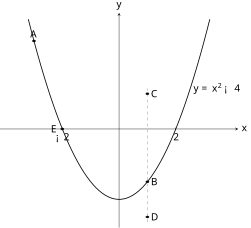
查看 TikZ 原始碼
\begin{document}
\begin{tikzpicture}[>=stealth, yscale=0.62]
\draw[->] (-4.2,0) -- (4.2,0) node[right] {$x$};
\draw[->] (0,-5.6) -- (0,6.6) node[above] {$y$};
\draw[thick, domain=-3.2:3.2, samples=60, variable=\x] plot ({\x},{\x*\x-4});
\node[right] at (2.5,2.3) {$y=x^2-4$};
\draw (-2,0.08) -- (-2,-0.08) node[below] {$-2$};
\draw (2,0.08) -- (2,-0.08) node[below] {$2$};
\draw[dashed, gray] (1,-5.3) -- (1,2.3);
\filldraw (-3,5) circle (1.6pt) node[above] {$A$};
\filldraw (1,-3) circle (1.6pt) node[right] {$B$};
\filldraw (1,2) circle (1.6pt) node[right] {$C$};
\filldraw (1,-5) circle (1.6pt) node[right] {$D$};
\filldraw (-2,0) circle (1.6pt) node[left] {$E$};
\end{tikzpicture}
\end{document}图 28-6：抛物线
上、上方、下方取点。
、 、 在曲线上，其纵坐标的正负即 的正负；
、 与曲线比高低，说明曲线上下不等于 轴上下。
设 $a, b, c \in \mathbb{R}$，$a \neq 0$，$f(x) = ax^2 + bx + c$，$\Delta = b^2 - 4ac$。以 $\alpha$、$\beta$（$\alpha \le \beta$）记对应方程 $f(x) = 0$ 的实根（§21.1.2 函数的零点）：
- $\Delta > 0$：两相异实根，$\alpha = \dfrac{-b - \sqrt{\Delta}}{2a}$，$\beta = \dfrac{-b + \sqrt{\Delta}}{2a}$；
- $\Delta = 0$：重根 $\alpha = \beta = -\dfrac{b}{2a}$；
- $\Delta < 0$：无实根，$\alpha$、$\beta$ 不出现。
当 $a > 0$ 时：
| $\Delta$ | 对应方程 $f(x) = 0$ 的根 | 抛物线与 $x$ 轴 | $f(x) > 0$ 的解 | $f(x) < 0$ 的解 |
|---|---|---|---|---|
| $\Delta > 0$ | 两相异实根 $\alpha < \beta$ | 交于两点 | $x < \alpha$ 或 $x > \beta$ | $\alpha < x < \beta$ |
| $\Delta = 0$ | 重根 $\alpha$ | 相切于顶点 | $x \neq \alpha$ | 无解 |
| $\Delta < 0$ | 无实根 | 无交点 | 全体实数 | 无解 |
不等号换为 $\ge$、$\le$ 时，解集并入使 $f(x) = 0$ 成立的点（即 $\alpha$、$\beta$；$\Delta = 0$ 时 $f(x) \ge 0$ 的解为全体实数）。若 $a < 0$，先把两边乘 $-1$（§11.2.1 变号法则）化为 $a > 0$ 的情形再读表。
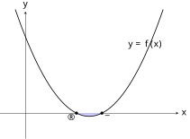
查看 TikZ 原始碼
\begin{document}
\begin{tikzpicture}[>=stealth]
\draw[->] (-1,0) -- (6,0) node[right] {$x$};
\draw[->] (0,-1) -- (0,4) node[above] {$y$};
\fill[blue!20] plot[domain=2:3, smooth] ({\x},{0.5*(\x-2)*(\x-3)}) -- cycle;
\draw[thick, domain=-0.4:5.4, smooth, variable=\x] plot ({\x},{0.5*(\x-2)*(\x-3)});
\filldraw (2,0) circle (1.5pt) node[below left] {$\alpha$};
\filldraw (3,0) circle (1.5pt) node[below right] {$\beta$};
\node[above] at (4.7,2.4) {$y=f(x)$};
\end{tikzpicture}
\end{document}设 $a > 0$，抛物线开口向上（§21.4）。
若 $\Delta > 0$，由 §21.7.1，抛物线与 $x$ 轴交于 $\alpha, \beta$（$\alpha < \beta$）。
如图 28-7 所示，$f(x) > 0$ 对应图像在 $x$ 轴上方的部分，即 $x < \alpha$ 及 $x > \beta$ 两段；
$f(x) < 0$ 对应图像在 $x$ 轴下方的部分，即 $\alpha < x < \beta$。
图 28-7：$a > 0$ 且 $\Delta > 0$ 时，阴影部分（$x$ 轴下方）即 $f(x) < 0$ 的解 $\alpha < x < \beta$。
若 $\Delta = 0$，抛物线与 $x$ 轴相切于 $\alpha$，整条抛物线在 $x$ 轴上方或恰触轴：$f(x) \ge 0$ 恒成立，等号仅于 $x = \alpha$ 取得。 故 $f(x) > 0$ 的解为 $x \neq \alpha$，$f(x) < 0$ 无解。
若 $\Delta < 0$，抛物线与 $x$ 轴无交点，整条抛物线在 $x$ 轴上方：$f(x) > 0$ 对全体实数成立，$f(x) < 0$ 无解。
$a < 0$ 时，两边乘 $-1$ 得不等号反转的等价不等式，即 $-f(x)$ 与 $0$ 以反转后的不等号联结，其中 $-f(x)$ 的首项系数为正，归入上段。
三种情况合并，定理成立。
图解法的结论可凝练为口诀，帮助记忆：
- 当 $a > 0$：大过零，两边走；小过零，向中间（有实根时）；
- 当 $a < 0$：大过零，向中间；小过零，两边走。
口诀与定理的表完全一致：$a > 0$ 时 $f(x) > 0$ 的解在两根之外（两边走），$f(x) < 0$ 的解在两根之间（向中间）。使用口诀前必须先确认首项系数的正负：$a < 0$ 时先变号，或改用 $a < 0$ 一行的口诀。
图解法依赖图像直观。若已会解对应方程，还可以把不等式直接化为「求根」与「读口诀」两步，这就是下面的代数法。
解一元二次不等式 $ax^2 + bx + c > 0$（$<$、$\ge$、$\le$ 同理）：
- 化正：若 $a < 0$，两边乘 $-1$ 并反转不等号（§11.2.1），使首项系数为正；
- 求根：解对应方程 $ax^2 + bx + c = 0$，先试因式分解（§18.1.2），不成则用二次公式（§18.1.4）；以 $\Delta = b^2 - 4ac$ 定根数：$\Delta > 0$ 得 $\alpha < \beta$，$\Delta = 0$ 得重根 $\alpha$，$\Delta < 0$ 无实根而直接按图解法的表读出「全体实数」或「无解」；
- 套口诀（$a > 0$）：大过零，两边走（$x < \alpha$ 或 $x > \beta$）；小过零，向中间（$\alpha < x < \beta$）；$\Delta = 0$ 时 $f(x) > 0$ 的解为 $x \neq \alpha$、$f(x) < 0$ 无解；
- 并等号：不等号为 $\ge$、$\le$ 时把 $\alpha$、$\beta$ 并入解集，数线端点改画实心点（§11.2.2）。
原理：口诀即上面的图解法定理。代数上可同时核对：$f(x) \equiv a(x - \alpha)(x - \beta)$，$x > \beta$ 时两因式同号，每向左越过一个根恰有一因式变号、乘积变号一次，故两根之外同号、两根之间异号，与口诀一致。
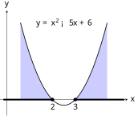
查看 TikZ 原始碼
\begin{document}
\begin{tikzpicture}[>=stealth]
\draw[->] (-0.3,0) -- (5.3,0) node[right] {$x$};
\draw[->] (0,-0.7) -- (0,3.9) node[above] {$y$};
\fill[blue!20] plot[domain=0.6:2, samples=40, smooth, variable=\x] ({\x},{(\x-2)*(\x-3)}) -- (2,0) -- (0.6,0) -- cycle;
\fill[blue!20] plot[domain=3:4.4, samples=40, smooth, variable=\x] ({\x},{(\x-2)*(\x-3)}) -- (4.4,0) -- (3,0) -- cycle;
\draw[thick, domain=0.6:4.4, samples=60, variable=\x] plot ({\x},{(\x-2)*(\x-3)});
\node at (2.5,3.35) {$y=x^2-5x+6$};
\draw[line width=2pt] (-0.15,0) -- (2,0);
\draw[line width=2pt] (3,0) -- (5.15,0);
\draw[fill=white] (2,0) circle (2pt);
\draw[fill=white] (3,0) circle (2pt);
\node[below] at (2,-0.08) {$2$};
\node[below] at (3,-0.08) {$3$};
\end{tikzpicture}
\end{document}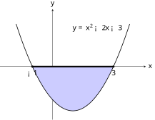
查看 TikZ 原始碼
\begin{document}
\begin{tikzpicture}[>=stealth, yscale=0.55]
\draw[->] (-2.6,0) -- (4.6,0) node[right] {$x$};
\draw[->] (0,-4.8) -- (0,5.2) node[above] {$y$};
\fill[blue!20] plot[domain=-1:3, samples=50, smooth, variable=\x] ({\x},{\x*\x-2*\x-3}) -- (3,0) -- (-1,0) -- cycle;
\draw[thick, domain=-1.8:3.8, samples=60, variable=\x] plot ({\x},{\x*\x-2*\x-3});
\node at (2.2,3.5) {$y=x^2-2x-3$};
\draw[line width=2pt] (-1,0) -- (3,0);
\fill (-1,0) ellipse (1.5pt and 2.7pt);
\fill (3,0) ellipse (1.5pt and 2.7pt);
\node[below] at (-1,-0.15) {$-1$};
\node[below] at (3,-0.15) {$3$};
\end{tikzpicture}
\end{document}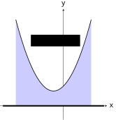
查看 TikZ 原始碼
\begin{document}
\begin{tikzpicture}[>=stealth]
\draw[->] (-3.2,0) -- (2.2,0) node[right] {$x$};
\draw[->] (0,-0.7) -- (0,4.9) node[above] {$y$};
\fill[blue!20] plot[domain=-2.4:1.4, samples=50, smooth, variable=\x] ({\x},{\x*\x+\x+1}) -- (1.4,0) -- (-2.4,0) -- cycle;
\draw[thick, domain=-2.4:1.4, samples=60, variable=\x] plot ({\x},{\x*\x+\x+1});
\node[fill=white] at (-0.4,3.3) {$y=x^2+x+1$};
\draw[line width=2pt] (-3.05,0) -- (2.05,0);
\end{tikzpicture}
\end{document}解下列一元二次不等式。
- $x^2 - 5x + 6 > 0$
- $-x^2 + 2x + 3 \ge 0$
- $x^2 + x + 1 > 0$
- 对应方程 $x^2 - 5x + 6 = 0$ 分解为 $(x - 2)(x - 3) = 0$，得 $\alpha = 2$、$\beta = 3$；$a = 1 > 0$。所求为 $> 0$，套口诀「大过零，两边走」，解为 $x < 2$ 或 $x > 3$。如图 28-8A 所示，抛物线在 $x$ 轴上方的两段（阴影）即解之区域。
图 28-8A：$y = x^2 - 5x + 6$ 与 $x$ 轴交于 $2$、$3$；
图像在 $x$ 轴上方的两段（阴影）即 $x^2 - 5x + 6 > 0$ 的解之区域：$x < 2$ 或 $x > 3$（粗线段，空心圆表示端点不含）。
- 首项系数为负，两边乘 $-1$，不等号反转：$x^2 - 2x - 3 \le 0$。对应方程分解为 $(x + 1)(x - 3) = 0$，得 $\alpha = -1$、$\beta = 3$；由 $a = 1 > 0$、小过零向中间，得 $-1 \le x \le 3$（含等号，并入两根）。如图 28-8B 所示，抛物线 $y = x^2 - 2x - 3$ 在 $x$ 轴下方的段（阴影）即解之区域，实心点表示端点并入。
图 28-8B：$-x^2 + 2x + 3 \ge 0$ 两边乘 $-1$ 化为 $x^2 - 2x - 3 \le 0$：图像在 $x$ 轴下方的段（阴影）即解之区域 $-1 \le x \le 3$（粗线段，实心点表示端点并入）。
- $\Delta = 1 - 4 = -3 < 0$，对应方程无实根，$a = 1 > 0$：按表读出抛物线整条在 $x$ 轴上方。故解为全体实数。如图 28-8C 所示，阴影（图像与 $x$ 轴之间）覆盖全部 $x$，粗线段为整条数线。
图 28-8C：$y = x^2 + x + 1$（$\Delta = -3 < 0$）与 $x$ 轴无交点，整条图像在轴上方（阴影）：$x^2 + x + 1 > 0$ 的解之区域为整条数线（粗线段），解为全体实数。
设 $f(x) = ax^2 + bx + c$，$a \neq 0$，$\Delta < 0$。则：
- 若 $a > 0$，$f(x) > 0$ 对全体实数成立；
- 若 $a < 0$，$f(x) < 0$ 对全体实数成立。
配方（§21.2）：$f(x) = a\left(x + \dfrac{b}{2a}\right)^2 - \dfrac{\Delta}{4a}$。
$\Delta < 0$ 时 $-\dfrac{\Delta}{4a}$ 与 $a$ 同号：$a > 0$ 时 $-\dfrac{\Delta}{4a} > 0$，而 $a\left(x + \dfrac{b}{2a}\right)^2 \ge 0$，两非负项之和（其一恒正）为正，故 $f(x) > 0$；
$a < 0$ 时同理各项非正且其一恒负，故 $f(x) < 0$。
不等式(I) §11.3.2 证得基本不等式 $a^2 + b^2 \ge 2ab$（等号当且仅当 $a = b$）。本节内容 DSE 常规课程不作要求，仅作增润：对正数 $x, y$，取 $a = \sqrt{x}$，$b = \sqrt{y}$ 代入，得 $x + y \ge 2\sqrt{xy}$，即
$$\frac{x + y}{2} \ge \sqrt{xy} (x, y > 0),$$
等号当且仅当 $x = y$。左边称为算术平均，右边称为几何平均，故此式称为均值不等式（AM-GM Inequality）。进一步地，对实数 $a_1, b_1, a_2, b_2$，柯西-施瓦茨不等式 $(a_1^2 + b_1^2)(a_2^2 + b_2^2) \ge (a_1 a_2 + b_1 b_2)^2$ 同属此类增润内容，证明同样由平方非负性完成。
28.1.4 含绝对值的不等式（Inequalities Involving Absolute Values）
前面的不等式都只含代数式本身。绝对值一进来，题目就换了性质：
解析几何(I) §15.1.5 则指出
设 $u$ 为含未知数 $x$ 的代数式，$c$ 为实数且 $c > 0$。则
- $\lvert u \rvert < c \iff -c < u < c$；
- $\lvert u \rvert > c \iff u < -c$ 或 $u > c$。
不等号取 $\le$、$\ge$ 时，右边相应并入等号：$\lvert u \rvert \le c \iff -c \le u \le c$，$\lvert u \rvert \ge c \iff u \le -c$ 或 $u \ge c$。
只证 $c > 0$ 的两条，含等号情形逐字相同。
按 §6.3.1 的分段表示，以 $u \ge 0$ 与 $u < 0$ 分两支讨论，两支以 $\lor$ 联结（§28.1.1）。
第 1 条（$\Rightarrow$）：设 $\lvert u \rvert < c$。
因 $\lvert u \rvert \ge 0$，有 $0 \le \lvert u \rvert < c$。
$u \ge 0$ 时 $\lvert u \rvert = u$，故 $u < c$，又 $u \ge 0 > -c$，得 $-c < u < c$；
$u < 0$ 时 $\lvert u \rvert = -u$，故 $-u < c$ 即 $u > -c$，又 $u < 0 < c$，同样得 $-c < u < c$。
两支结论相同。
第 1 条（$\Leftarrow$）：设 $-c < u < c$。
$u \ge 0$ 时 $\lvert u \rvert = u < c$；
$u < 0$ 时 $\lvert u \rvert = -u$，由 $u > -c$ 两边乘 $-1$、不等号反转得 $-u < c$，即 $\lvert u \rvert < c$。 故恒有 $\lvert u \rvert < c$。
第 2 条（$\Rightarrow$）：设 $\lvert u \rvert > c$。
$u \ge 0$ 时 $\lvert u \rvert = u > c$，即 $u > c$；
$u < 0$ 时 $\lvert u \rvert = -u > c$，即 $u < -c$。
两支合起来给出 $u > c$ 或 $u < -c$。
第 2 条（$\Leftarrow$）：若 $u > c > 0$，则 $\lvert u \rvert = u > c$；
若 $u < -c < 0$，则 $\lvert u \rvert = -u > c$。
两个方向合并，故 $\lvert u \rvert > c \iff u < -c$ 或 $u > c$。
几何上，第 1 条说的是「到原点的距离小于
查看 TikZ 原始碼
\begin{document}
\begin{tikzpicture}[>=stealth]
\draw[->] (-4.4,0) -- (4.4,0);
\foreach \p/\n in {-2.6/-c, 0/0, 2.6/c}{\draw (\p,0.08) -- (\p,-0.08) node[below] {$\n$};}
\draw (-2.6,0) -- (-2.6,0.7);
\draw[->] (-2.6,0.7) -- (3.9,0.7);
\filldraw (-2.6,0.7) circle (1.5pt);
\node[above] at (-0.7,0.7) {$u>-c$};
\draw (2.6,0) -- (2.6,1.3);
\draw[->] (2.6,1.3) -- (-3.9,1.3);
\filldraw (2.6,1.3) circle (1.5pt);
\node[above] at (0.8,1.3) {$u<c$};
\draw[line width=2pt] (-2.6,0) -- (2.6,0);
\end{tikzpicture}
\end{document}图 28-9A：
即 ，两射线在数线上的重叠段（粗线段）即解集； 取严格不等号
时两端改画空心圆。
查看 TikZ 原始碼
\begin{document}
\begin{tikzpicture}[>=stealth]
\draw[->] (-4.6,0) -- (4.6,0);
\foreach \p/\n in {-2.6/-c, 0/0, 2.6/c}{\draw (\p,0.08) -- (\p,-0.08) node[below] {$\n$};}
\draw (-2.6,0) -- (-2.6,0.7);
\draw[->] (-2.6,0.7) -- (-4.2,0.7);
\draw[fill=white] (-2.6,0.7) circle (2pt);
\node[above] at (-3.5,0.7) {$u<-c$};
\draw (2.6,0) -- (2.6,0.7);
\draw[->] (2.6,0.7) -- (4.2,0.7);
\draw[fill=white] (2.6,0.7) circle (2pt);
\node[above] at (3.5,0.7) {$u>c$};
\draw[line width=2pt] (-4.3,0) -- (-2.6,0);
\draw[line width=2pt] (2.6,0) -- (4.3,0);
\end{tikzpicture}
\end{document}图 28-9B：
即 或 ，解集为向两端分离延伸的两段（粗线段），中间使 的部分不含。
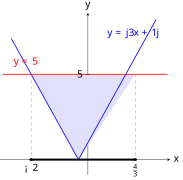
查看 TikZ 原始碼
\usepackage{amsmath}
\begin{document}
\begin{tikzpicture}[>=stealth, yscale=0.6]
\draw[->] (-3.1,0) -- (2.9,0) node[right] {$x$};
\draw[->] (0,-0.9) -- (0,8.6) node[above] {$y$};
\fill[blue!12] (-2,5) -- (-0.333,0) -- (1.667,5) -- cycle;
\draw[blue, thick] (-2.7,7.1) -- (-0.333,0) -- (2.4,8.2);
\draw[red, thick] (-3.0,5) -- (2.8,5);
\draw[dashed, gray] (-2,5) -- (-2,0);
\draw[dashed, gray] (1.667,5) -- (1.667,0);
\draw (-2,0.08) -- (-2,-0.08) node[below] {$-2$};
\draw (1.667,0.08) -- (1.667,-0.08) node[below] {$\tfrac{4}{3}$};
\draw (0.08,5) -- (-0.08,5) node[left] {$5$};
\draw[line width=2pt] (-2,0) -- (1.667,0);
\filldraw (-2,0) circle (1.7pt);
\filldraw (1.667,0) circle (1.7pt);
\node[blue] at (1.6,7.4) {$y=\lvert 3x+1\rvert$};
\node[red] at (-2.2,5.7) {$y=5$};
\end{tikzpicture}
\end{document}解下列不等式。
- $\lvert 3x + 1 \rvert \le 5$
- $\left\lvert 2 - \dfrac{x}{3} \right\rvert > 4$
- 按基本解型（含等号，端点并入）：$-5 \le 3x + 1 \le 5$。这是一条三段式的复合不等式（§28.1.1）：三处同减 $1$、同除以正数 $3$（§11.2.1 变号法则），得 $-2 \le x \le \dfrac{4}{3}$。解集为 $\{x : -2 \le x \le \tfrac{4}{3}\} = \left[-2, \tfrac{4}{3}\right]$，其形状即图 28-9A 的一般情形。如图 28-10 所示，V 形线 $y = \lvert 3x + 1 \rvert$ 不高于水平线 $y = 5$ 的那一段，投影到 $x$ 轴即此解集。
- 两边乘 $3$（正数，不等号不变）得 $\lvert 6 - x \rvert > 12$。由 §6.3.1 的分段表示 $\lvert 6 - x \rvert = \lvert x - 6 \rvert$，故这是「到 $6$ 的距离大于 $12$」。按第 2 条取 $u = x - 6$、$c = 12$：$x - 6 < -12$ 或 $x - 6 > 12$，即 $x < -6$ 或 $x > 18$。解集为两段分离的无限区间，即图 28-9B 的一般情形。
图 28-10：$y = \lvert 3x + 1 \rvert$（蓝）与 $y = 5$（红）。
V 形线不高于水平线的一段即 $\lvert 3x + 1 \rvert \le 5$ 的解之区域，投影到 $x$ 轴得 $-2 \le x \le \dfrac{4}{3}$。
设 $u$、$v$ 为含未知数 $x$ 的代数式。则
$$\lvert u \rvert > \lvert v \rvert \iff u^2 > v^2, \lvert u \rvert < \lvert v \rvert \iff u^2 < v^2, \lvert u \rvert = \lvert v \rvert \iff u^2 = v^2,$$
含等号的不等式（$\ge$、$\le$）同理。
记 $p = \lvert u \rvert$、$q = \lvert v \rvert$，则 $p \ge 0$、$q \ge 0$，且由 §6.3.1 的定义 $\lvert u \rvert = \sqrt{u^2}$ 得 $p^2 = u^2$、$q^2 = v^2$（§15.1.5 的绝对值平方性质）。
（$\Rightarrow$） 设 $p > q$。
则 $p - q > 0$； 又 $p > q \ge 0$ 故 $p > 0$，于是 $p + q > 0$。 两边同乘正数 $p + q$（§11.1 序性质）得 $(p - q)(p + q) > 0$，即 $p^2 - q^2 > 0$，故 $p^2 > q^2$，亦即 $u^2 > v^2$。
（$\Leftarrow$） 设 $u^2 > v^2$，即 $(p - q)(p + q) > 0$。
反设 $p \le q$，则 $p - q \le 0$ 而 $p + q \ge 0$，乘积 $\le 0$，矛盾。 故 $p > q$，即 $\lvert u \rvert > \lvert v \rvert$。
两个方向合并，$\lvert u \rvert > \lvert v \rvert \iff u^2 > v^2$。
把 $>$ 换为 $<$、$=$、$\ge$、$\le$，上述论证逐字照做即得其余各式。
有了这条定理，去绝对值就化为解一元二次不等式：
适用于 $\lvert u \rvert$ 与 $\lvert v \rvert$ 比较型不等式，其中 $u$、$v$ 为关于 $x$ 的式子（一次式最常见）：
- 平方：两边平方，按同方比较定理得 $u^2 > v^2$（或 $<$、$\ge$、$\le$）；
- 化二次：展开移项，合并为 $ax^2 + bx + c > 0$ 的形式；
- 求解：按 §28.1.3 的求根加口诀法解出，并按原不等号并等号。
适用条件：$u$、$v$ 取实数值即可，定理对一切实数成立，无须另设正负条件。若只有一侧含绝对值（如 $\lvert u \rvert > c$），改用上面的基本解型，不必平方。
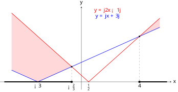
查看 TikZ 原始碼
\usepackage{amsmath}
\begin{document}
\begin{tikzpicture}[>=stealth, yscale=0.45]
\draw[->] (-5.6,0) -- (6.2,0) node[right] {$x$};
\draw[->] (0,-1.2) -- (0,11.6) node[above] {$y$};
\fill[red!15] (-4.8,10.6) -- (-0.667,2.333) -- (-3,0) -- (-4.8,1.8) -- cycle;
\fill[red!15] (4,7) -- (5.4,9.8) -- (5.4,8.4) -- cycle;
\draw[blue, thick] (-4.8,1.8) -- (-3,0) -- (5.4,8.4);
\draw[red, thick] (-4.8,10.6) -- (0.5,0) -- (5.4,9.8);
\draw[dashed, gray] (-0.667,2.333) -- (-0.667,0);
\draw[dashed, gray] (4,7) -- (4,0);
\draw (-3,0.08) -- (-3,-0.08) node[below] {$-3$};
\draw (-0.667,0.08) -- (-0.667,-0.08) node[below] {$-\tfrac{2}{3}$};
\draw (0.5,0.08) -- (0.5,-0.08) node[below] {$\tfrac{1}{2}$};
\draw (4,0.08) -- (4,-0.08) node[below] {$4$};
\draw[line width=2pt] (-5.3,0) -- (-0.667,0);
\draw[line width=2pt] (4,0) -- (5.9,0);
\draw[fill=white] (-0.667,0) ellipse (2pt and 4.4pt);
\draw[fill=white] (4,0) ellipse (2pt and 4.4pt);
\fill (-0.667,2.333) ellipse (1.5pt and 3.3pt);
\fill (4,7) ellipse (1.5pt and 3.3pt);
\node[red] at (1.8,11.0) {$y=\lvert 2x-1\rvert$};
\node[blue] at (1.8,10.1) {$y=\lvert x+3\rvert$};
\end{tikzpicture}
\end{document}解 $\lvert 2x - 1 \rvert > \lvert x + 3 \rvert$。
两边平方：$(2x - 1)^2 > (x + 3)^2$，即 $4x^2 - 4x + 1 > x^2 + 6x + 9$。移项合并：$3x^2 - 10x - 8 > 0$。对应方程分解：$(3x + 2)(x - 4) = 0$，两根 $\alpha = -\dfrac{2}{3}$、$\beta = 4$；$a = 3 > 0$，所求为 $> 0$，套口诀「大过零，两边走」，得 $x < -\dfrac{2}{3}$ 或 $x > 4$。如图 28-11 所示，红线高于蓝线的两段（浅红阴影）即原不等式的解之区域。
图 28-11：蓝线 $y = \lvert x + 3 \rvert$ 与红线 $y = \lvert 2x - 1 \rvert$ 相交于 $x = -\dfrac{2}{3}$ 与 $x = 4$ 两处；
红线位于蓝线上方的两段（浅红阴影）即 $\lvert 2x - 1 \rvert > \lvert x + 3 \rvert$ 的解之区域，投影到 $x$ 轴（粗线段，空心圆表示端点不含）得 $x < -\dfrac{2}{3}$ 或 $x > 4$。
$\lvert u \rvert < c$ 与 $\lvert u \rvert > c$ 的解型只在 $c > 0$ 时成立。$c \le 0$ 时若照抄解型会得到空集与全集颠倒的错误答案：$\lvert 2x - 1 \rvert < -3$ 无解（绝对值非负），而不是 $-3 < 2x - 1 < 3$。作答前先写出 $c$ 的值并判其正负。
28.2 联立二元一次不等式（Systems of Linear Inequalities in Two Unknowns）
本节难度上限：T B ｜ C C+ ｜ E B- ｜ Q B-
§28.1 的解集画在数线上，因为未知数只有一个。当不等式含有两个未知数时，解是一个有序对
（§16.3.3、§19.2.1），须画在坐标平面上：一条二元一次不等式对应直线分割出的半个平面，联立不等式的解是各半平面的公共部分。
28.2.1 二元一次不等式与半平面（Linear Inequalities in Two Unknowns and Half-Planes）
- 形如 $Ax + By + C > 0$、$Ax + By + C < 0$、$Ax + By + C \ge 0$ 或 $Ax + By + C \le 0$ 的不等式，其中 $A, B, C \in \mathbb{R}$ 且 $A, B$ 不同时为 $0$，称为二元一次不等式。
- 满足不等式的有序对 $(x, y)$ 称为它的解；
一个二元一次不等式通常有无穷多个解。 方程 $Ax + By + C = 0$ 的图像是一条直线（直线方程），称为该不等式的边界直线（Boundary Line）。
如图 28-12 所示，边界直线本身只使
查看 TikZ 原始碼
\begin{document}
\begin{tikzpicture}[>=stealth]
\draw[->] (-1.4,0) -- (5.4,0) node[right] {$x$};
\draw[->] (0,-2.2) -- (0,5.2) node[above] {$y$};
\draw[thick] (-0.5,5.0) -- (2.6,-1.2);
\node at (1.0,2.4) {$2x+y=4$};
\draw (2,0.08) -- (2,-0.08) node[below] {$2$};
\draw (0.08,4) -- (-0.08,4) node[left] {$4$};
\filldraw (0,4) circle (1.6pt) node[above right] {$T_1$};
\filldraw (2,0) circle (1.6pt) node[above right] {$T_2$};
\draw[fill=white] (1,1) circle (2pt) node[above right] {$S$};
\end{tikzpicture}
\end{document}图 28-12：二元一次不等式
的边界直线 。 线上点
、 只使等式成立； 线外点
使 ，不满足该不等式。
边界直线把平面分成两半，不等式的解恰好占据其中一半。这一直觉可以写成一条定理；下面的形式化证明以序性质一步完成，属增润，DSE 常规课程以「直线把平面分成两半」的直观理解为准。半平面作为点集的正式定义（含边界与否的区分）与「同侧」「异侧」的符号判据，见 轨迹 §30.1.2。
直线 $L: Ax + By + C = 0$ 把坐标平面分成两个半平面（Half-Plane）：
$$H_+ = \{(x, y) : Ax + By + C > 0\}, H_- = \{(x, y) : Ax + By + C < 0\}$$
平面上每一点恰属于 $H_+$、$H_-$、$L$ 三者之一。
对平面上任一点 $(x, y)$，把坐标代入 $Ax + By + C$ 得一个实数。
由实数的三歧性（§11.1 序性质），该实数大于零、小于零、等于零恰一成立：大于零时 $(x, y) \in H_+$，小于零时 $(x, y) \in H_-$，等于零时 $(x, y) \in L$。 故三者互不相交且覆盖全平面。
定理的三个集合把平面分毫不漏地分完：平面上任一点，要么使
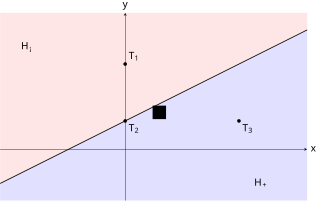
查看 TikZ 原始碼
\begin{document}
\begin{tikzpicture}[>=stealth]
\fill[red!10] (-4.4,-1.2) -- (6.4,4.2) -- (6.4,4.8) -- (-4.4,4.8) -- cycle;
\fill[blue!12] (-4.4,-1.2) -- (6.4,4.2) -- (6.4,-1.8) -- (-4.4,-1.8) -- cycle;
\draw[->] (-4.4,0) -- (6.4,0) node[right] {$x$};
\draw[->] (0,-1.8) -- (0,4.8) node[above] {$y$};
\draw[thick] (-4.4,-1.2) -- (6.4,4.2);
\node[fill=white] at (1.2,1.3) {$L$};
\node at (-3.4,3.6) {$H_-$};
\node at (4.8,-1.2) {$H_+$};
\filldraw (0,3) circle (1.6pt) node[above right] {$T_1$};
\filldraw (0,1) circle (1.6pt) node[below right] {$T_2$};
\filldraw (4,1) circle (1.6pt) node[below right] {$T_3$};
\end{tikzpicture}
\end{document}图 28-13：直线
把平面分成 （浅蓝， ）与 （浅红， ）两个半平面。 点
、 、 分别落在 、 、 ：每一点恰属三者之一。
以 $2x - 3y > 6$ 为例，四步的图示见图 28-14A、图 28-14B。
- 画边界：画出边界直线 $Ax + By + C = 0$。含等号（$\ge$、$\le$）画实线（Solid Line），边界属于解区域；不含等号（$>$、$<$）画虚线（Dashed Line），边界不属于解区域；
- 试值：取不在直线上的一点（通常取原点 $(0, 0)$）代入不等式检验；
- 定侧：若代入后不等式成立，解区域为该点所在的一侧；若不成立，为另一侧；
- 涂阴影：把解区域涂上阴影或斜线。
步骤 1 与步骤 2 见图 28-14A：边界
查看 TikZ 原始碼
\begin{document}
\begin{tikzpicture}[>=stealth]
\draw[->] (-1.8,0) -- (6.6,0) node[right] {$x$};
\draw[->] (0,-3.6) -- (0,3.2) node[above] {$y$};
\draw[thick, dashed] (-1.8,-3.2) -- (6.6,2.4);
\node at (4.6,0.6) {$2x-3y=6$};
\draw (3,0.08) -- (3,-0.08) node[below] {$3$};
\draw (0.08,-2) -- (-0.08,-2) node[left] {$-2$};
\filldraw (0,0) circle (1.6pt) node[above left] {$(0,0)$};
\end{tikzpicture}
\end{document}图 28-14A：步骤 1、2。
不含等号故边界
画虚线； 取不在直线上的原点代入，得
，不成立。
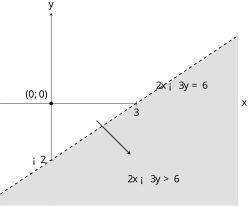
查看 TikZ 原始碼
\begin{document}
\begin{tikzpicture}[>=stealth]
\draw[->] (-1.8,0) -- (6.6,0) node[right] {$x$};
\draw[->] (0,-3.6) -- (0,3.2) node[above] {$y$};
\fill[gray!25] (-1.8,-3.2) -- (6.6,2.4) -- (6.6,-3.6) -- (-1.8,-3.6) -- cycle;
\draw[thick, dashed] (-1.8,-3.2) -- (6.6,2.4);
\node at (4.6,0.6) {$2x-3y=6$};
\draw (3,0.08) -- (3,-0.08) node[below] {$3$};
\draw (0.08,-2) -- (-0.08,-2) node[left] {$-2$};
\filldraw (0,0) circle (1.6pt) node[above left] {$(0,0)$};
\draw[->, thick] (1.6,-0.6) -- (2.8,-1.8);
\node at (3.6,-2.7) {$2x-3y>6$};
\end{tikzpicture}
\end{document}图 28-14B：步骤 3、4。
原点不满足不等式，解区域为对侧（直线下方的半平面，阴影）；
虚线示边界不属于解区域。
边界的实线/虚线规则，与 §11.2.2 数线端点的实心点 $\bullet$/空心圆 $\circ$ 规则完全一致：含等号则边界属于解集（实线、实心），不含等号则不属于（虚线、空心）。这是 DSE 作图题最频繁的扣分点之一。 试值法（Test Point Method）之所以可行，依据正是半平面定理：不在 $L$ 上的点必属于 $H_+$、$H_-$ 恰一者，而同一半平面内所有点的符号相同，故检验一点即定出整侧。原点 $(0, 0)$ 是最方便的选择，代入后只剩常数项 $C$；若原点恰在直线上（$C = 0$），改取 $(1, 0)$ 或 $(0, 1)$。
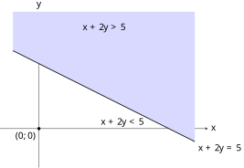
查看 TikZ 原始碼
\begin{document}
\begin{tikzpicture}[>=stealth]
\draw[->] (-1.5,0) -- (6.5,0) node[right] {$x$};
\draw[->] (0,-1.5) -- (0,4.5) node[above] {$y$};
\fill[blue!15] (-1,3) -- (6,-0.5) -- (6,4.5) -- (-1,4.5) -- cycle;
\draw[thick] (-1,3) -- (6,-0.5) node[below right] {$x+2y=5$};
\filldraw (0,0) circle (1.5pt) node[below left] {$(0,0)$};
\node[above] at (2.5,3.6) {$x+2y>5$};
\node[below] at (3.2,0.5) {$x+2y<5$};
\end{tikzpicture}
\end{document}在坐标平面上表示 $x + 2y \ge 5$ 的解区域。
- 边界为直线 $x + 2y = 5$，含等号，画实线。该直线过 $(5, 0)$ 与 $(0, 2.5)$。
- 取原点试值：$0 + 2(0) = 0 \ge 5$ 不成立。
- 故解区域为原点所在侧的对侧，即直线上方的半平面。如图 28-15 所示，阴影部分即解区域。
图 28-15：直线 $x + 2y = 5$（实线）把平面分成两个半平面；
原点试值不成立，解区域为上方半平面（阴影）。
设 $B \neq 0$，不等式已整理为 $y$ 的显式。若形如 $y > mx + c$ 或 $y \ge mx + c$，解区域为直线 $y = mx + c$ 的上方；若形如 $y < mx + c$ 或 $y \le mx + c$，解区域为直线的下方。
如图 28-16A 所示，「上大下小」是把不等式化成
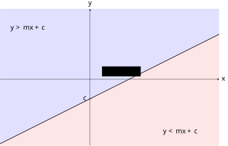
查看 TikZ 原始碼
\begin{document}
\begin{tikzpicture}[>=stealth]
\fill[blue!12] (-4.6,-3.3) -- (6.6,2.3) -- (6.6,3.6) -- (-4.6,3.6) -- cycle;
\fill[red!10] (-4.6,-3.3) -- (6.6,2.3) -- (6.6,-3.4) -- (-4.6,-3.4) -- cycle;
\draw[->] (-4.6,0) -- (6.6,0) node[right] {$x$};
\draw[->] (0,-3.4) -- (0,3.6) node[above] {$y$};
\draw[thick] (-4.6,-3.3) -- (6.6,2.3);
\node at (-3.2,2.6) {$y>mx+c$};
\node at (4.6,-2.7) {$y<mx+c$};
\node[fill=white] at (1.6,0.4) {$y=mx+c$};
\draw (0.08,-1) -- (-0.08,-1) node[left] {$c$};
\end{tikzpicture}
\end{document}图 28-16A：
的解区域是直线 的上方（浅蓝）， 是其下方（浅红）； 含等号时并入边界直线。
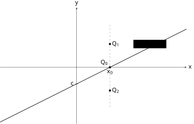
查看 TikZ 原始碼
\begin{document}
\begin{tikzpicture}[>=stealth]
\draw[->] (-4.6,0) -- (6.6,0) node[right] {$x$};
\draw[->] (0,-3.4) -- (0,3.6) node[above] {$y$};
\draw[thick] (-4.6,-3.3) -- (6.6,2.3);
\node[fill=white] at (4.4,1.4) {$y=mx+c$};
\draw[dashed, gray] (2,-2.4) -- (2,2.6);
\filldraw (2,1.4) circle (1.6pt) node[right] {$Q_1$};
\filldraw (2,0) circle (1.6pt) node[above left] {$Q_0$};
\filldraw (2,-1.4) circle (1.6pt) node[right] {$Q_2$};
\draw (2,0.08) -- (2,-0.08) node[below] {$x_0$};
\draw (0.08,-1) -- (-0.08,-1) node[left] {$c$};
\end{tikzpicture}
\end{document}对直线上横坐标为 $x_0$ 的点 $Q_0$，其纵坐标为 $mx_0 + c$。
如图 28-16B 所示，横坐标同为 $x_0$ 的点沿铅垂方向排列，纵坐标越大者位置越高：$Q_0$ 上方各点的纵坐标 $y$ 满足 $y > mx_0 + c$，下方各点满足 $y < mx_0 + c$。
由 $x_0$ 的任意性，$y > mx + c$ 的解区域即直线上方，$y < mx + c$ 即下方；
并入等号只是把边界直线自身收进解区域，不改变开侧。
图 28-16B：证明用的取点。
横坐标同为 $x_0$ 的三点中，$Q_0$ 在直线上（纵坐标 $mx_0 + c$），$Q_1$ 在其上故 $y > mx_0 + c$，$Q_2$ 在其下故 $y < mx_0 + c$。
上大下小准则的前提是 $y$ 的系数为 $+1$。若原不等式中 $y$ 的系数为负（如 $-2y + x > 0$），须先按变号法则整理（乘除负数时不等号反转），再应用准则。例如 $-2y + x > 0$ 化为 $y < \dfrac{x}{2}$，解区域在直线 $y = \dfrac{x}{2}$ 下方。
28.2.2 不等式组与可行区域（Systems and Feasible Regions）
设 $I_1(x, y), I_2(x, y), \ldots, I_n(x, y)$ 为含两个未知数的开放命题，每个都是一个二元一次不等式。以合取联结的复合命题
$$I_1(x, y) \land I_2(x, y) \land \cdots \land I_n(x, y)$$
称为联立二元一次不等式，其解集为
$$\{(x, y) \in \mathbb{R}^2 \mid I_1(x, y) \land I_2(x, y) \land \cdots \land I_n(x, y)\},$$
即同时满足所有不等式的有序对 $(x, y)$ 的全体。与 §28.1.1 完全相同，日常以文字「且」表达这一合取，书写时用花括号把各不等式竖向并列。
联立二元一次不等式的解区域为各不等式对应半平面的交集：
$$R = R_1 \cap R_2 \cap \cdots \cap R_n$$
此交集称为该不等式组的可行区域（Feasible Region）。
由定理（逻辑连词的集合对应）（§28.1.1，二元情形逐字相同），「且」联结的条件之解集为各解集的交集；
每个二元一次不等式的解集为其半平面（含或不含边界）。 故 $(x, y)$ 满足不等式组 $\iff$ 对每个 $i$，$(x, y) \in R_i$ $\iff$ $(x, y) \in \bigcap_{i=1}^n R_i$。
- 画各边界：对每条不等式画边界直线，按含等号与否定实线或虚线；
- 定各侧：以试值法（或上大下小准则）标出每条不等式的解侧（常用箭头指向解侧）；
- 取公共：所有箭头共同指向的区域即可行区域，以阴影或斜线标出，并注明边界的实虚。
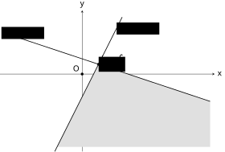
查看 TikZ 原始碼
\usepackage{amsmath}
\begin{document}
\begin{tikzpicture}[>=stealth]
\draw[->] (-3.6,0) -- (5.8,0) node[right] {$x$};
\draw[->] (0,-3.4) -- (0,2.8) node[above] {$y$};
\fill[gray!25] (0.714,0.429) -- (-1.1,-3.2) -- (5.6,-3.2) -- (5.6,-1.2) -- cycle;
\draw[thick] (-1.2,-3.4) -- (1.75,2.5);
\draw[thick] (-3.4,1.8) -- (5.6,-1.2);
\node[right, fill=white] at (1.5,2.0) {$2x-y=1$};
\node[above, fill=white] at (-2.6,1.533) {$x+3y=2$};
\filldraw (0.714,0.429) circle (1.5pt) node[right, fill=white] {$\left(\tfrac{5}{7},\tfrac{3}{7}\right)$};
\filldraw (0,0) circle (1.5pt) node[above left] {$O$};
\end{tikzpicture}
\end{document}画出联立不等式 $\begin{cases} 2x - y \ge 1 \x + 3y \le 2 \end{cases}$ 的可行区域。
边界 $2x - y = 1$ 过 $(1, 1)$ 与 $(0, -1)$，含等号画实线；原点试值：$0 - 0 \ge 1$ 不成立，解侧为不含原点的一侧（直线右下方，即 $y \le 2x - 1$ 的一侧）。边界 $x + 3y = 2$ 过 $(2, 0)$ 与 $(0, \tfrac{2}{3})$，实线；原点试值：$0 \le 2$ 成立，解侧为含原点的一侧（直线下方，即 $y \le \dfrac{2 - x}{3}$ 的一侧）。两边界联立 $2x - y = 1$、$x + 3y = 2$，解得交点 $\left(\dfrac{5}{7}, \dfrac{3}{7}\right)$。两半平面的公共部分是以该交点为顶点、开口向下、向左下与右下无限延伸的角形区域，即此不等式组的可行区域，如图 28-17 所示。
图 28-17：联立不等式 $2x - y \ge 1$ 且 $x + 3y \le 2$ 的可行区域（阴影角形区域）：两边界均含等号，画实线，交于顶点 $\left(\dfrac{5}{7}, \dfrac{3}{7}\right)$；
区域开口向下、向左下与右下无限延伸（无界）；
原点 $O$ 不满足第一个不等式，在区域外。
（可行区域由有限条直线围成，直观上必为凸多边形区域：每条直线像一把刀切割平面，留下的公共部分自然由直线段围成，且不会向内凹。本例向下方无限延伸，不封闭；「有界」「闭」的严格定义与由此而来的差异，见 §28.3.3。）
官方课程只要求以图解法解联立二元一次不等式：在坐标平面上画出各半平面，取重叠区域。自行以代数方法（逐对讨论各不等式的解侧并联立求解）处理不属于课程所需，DSE 作答以图解法为准。
28.3 线性规划（Linear Programming）
本节难度上限：T B ｜ C C+ ｜ E C+ ｜ Q B-
可行区域划好之后，自然的问题是：在这个区域内，哪一个点使某个量最大或最小？工厂在原料与工时的限制下求最大利润，运输在载重与体积的限制下求最低成本，都是同一类问题，即线性规划。
28.3.1 目标函数与约束条件（Objective Functions and Constraints）
设 $n$ 为正整数，$a_1, \ldots, a_n, c$ 为实数，其中 $a_1, \ldots, a_n$ 不全为 $0$。称
$$f: \mathbb{R}^n \to \mathbb{R}, f(x_1, \ldots, x_n) = a_1 x_1 + \cdots + a_n x_n + c$$
为（$n$ 元）线性函数（Linear Function）：每个自变量的最高次数为 $1$，自变量之间不相乘。定义域 $D_f = \mathbb{R}^n$，陪域为 $\mathbb{R}$（函数三要素见 §19.1.1、§19.1.3；$\mathbb{R}^n$ 见 §16.3.3）。 本章只用 $n = 2$ 的情形，称为二元线性函数：
$$f: \mathbb{R}^2 \to \mathbb{R}, f(x, y) = ax + by + c (a, b \text{ 不全为 } 0).$$
限制 $a, b$ 不全为 $0$ 是为排除常数函数（$f$ 恒等于 $c$，此时没有可优化的方向）。一元情形 $f(x) = kx + b$（$k \neq 0$）即 §19.3.2 的线性函数。 对每一个 $k \in \mathbb R$，定义等值线： $f(x, y) = k$ （ $ax + by + c - k = 0$），即是坐标平面上的一条直线（§20.3.2 一般式），这一事实是本节推线法与 §28.3.2 证明的支点。 与 §19.3.1 的「线性性」区别仍在：$c \neq 0$ 时 $f(0, 0) = c \neq 0$，齐次性即不成立，故本节的「线性」只指次数为一，不指 §19.3.1 的可加性与齐次性（§19.3.2 注记已辨）。
在给定的约束条件（Constraints，由若干二元一次不等式组成）下，求二元线性函数 $f$（称为目标函数，Objective Function，记 $z = f(x, y)$）的最大值或最小值的问题，称为线性规划（Linear Programming）问题。
- 满足所有约束条件的 $(x, y)$ 称为可行解（Feasible Solution）；可行解的全体 $\{(x, y) \in \mathbb{R}^2 \mid \text{各约束皆真}\}$ 即 §28.2.2 的可行区域 $R$；
- 使 $z$ 取得最大值（或最小值）的可行解称为最优解（Optimal Solution）。
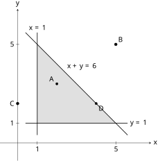
查看 TikZ 原始碼
\begin{document}
\begin{tikzpicture}[>=stealth]
\draw[->] (-0.9,0) -- (6.8,0) node[right] {$x$};
\draw[->] (0,-0.9) -- (0,6.8) node[above] {$y$};
\fill[gray!25] (1,1) -- (5,1) -- (1,5) -- cycle;
\draw[thick] (1,0.4) -- (1,5.6) node[above] {$x=1$};
\draw[thick] (0.4,1) -- (5.6,1) node[right] {$y=1$};
\draw[thick] (0.4,5.6) -- (5.6,0.4);
\node[above right] at (2.4,3.6) {$x+y=6$};
\draw (1,0.08) -- (1,-0.08) node[below] {$1$};
\draw (5,0.08) -- (5,-0.08) node[below] {$5$};
\draw (0.08,1) -- (-0.08,1) node[left] {$1$};
\draw (0.08,5) -- (-0.08,5) node[left] {$5$};
\filldraw (2,3) circle (1.7pt) node[above left] {$A$};
\filldraw (4,2) circle (1.7pt) node[below right] {$D$};
\draw[fill=white] (5,5) circle (2pt) node[above right] {$B$};
\draw[fill=white] (0,2) circle (2pt) node[left] {$C$};
\end{tikzpicture}
\end{document}某线性规划问题的约束条件为
$$\begin{cases} x \ge 1 \y \ge 1 \x + y \le 6 \end{cases}$$
目标函数为 $z = f(x, y) = 2x + 3y$。判断 $A(2, 3)$、$B(5, 5)$、$C(0, 2)$、$D(4, 2)$ 四点中哪些是可行解，并求各可行解的目标值。
三条边界分别为 $x = 1$、$y = 1$、$x + y = 6$，都以 $\ge$、$\le$ 书写，故边界属于可行区域；区域是以 $(1, 1)$、$(5, 1)$、$(1, 5)$ 为顶点的三角形（含内部与边界），如图 28-18 所示。逐点检验三个条件（合取 $\land$）：
- $A(2, 3)$：$2 \ge 1$、$3 \ge 1$、$2 + 3 = 5 \le 6$ 全真，故 $A$ 是可行解，$z = 2(2) + 3(3) = 13$；
- $B(5, 5)$：$5 + 5 = 10 > 6$，第三个条件假，故 $B$ 不是可行解（在区域外），其值 $z = 2(5) + 3(5) = 25$ 不可作为答案；
- $C(0, 2)$：$0 < 1$，第一个条件假，故 $C$ 不是可行解；
- $D(4, 2)$：$4 \ge 1$、$2 \ge 1$、$4 + 2 = 6 \le 6$ 全真（$D$ 恰在斜边界上），故 $D$ 是可行解，$z = 2(4) + 3(2) = 14$。
可行的是 $A$ 与 $D$，目标值分别为 $13$ 与 $14$；$B$ 的值虽最大，却不属可行区域，因此不是问题的答案。真正的最大值在顶点 $(1, 5)$ 处取得，为 $17$（比较三个顶点值 $5$、$13$、$17$ 即得），这正是下面顶点原理的用处。
图 28-18：约束 $x \ge 1$、$y \ge 1$、$x + y \le 6$ 的可行区域（阴影三角形）。
实心点 $A$、$D$ 在区域内（$D$ 在边界上），是可行解；
空心点 $B$、$C$ 在区域外，不是可行解。
约束条件通常以不等式表示：「原料不超过 8 单位」即 $x + 2y \le 8$，「产量非负」即 $x \ge 0$，$y \ge 0$。因此可行解的范围正是 §28.2 的可行区域；线性规划是联立二元一次不等式的应用延伸。文字转不等式是解题的第一道关口，常见对应如：「$x$ 不少于 $5$」即 $x \ge 5$；「总数不超过 $100$」即 $x + y \le 100$；「$A$ 的两倍加 $B$ 至少为 $30$」即 $2x + y \ge 30$。
28.3.2 顶点原理与求解方法（Vertex Principle and Solving Methods）
目标函数在哪里取得最值？答案是可行区域的顶点。下面的形式化论证属增润，DSE 常规课程以「平移直线看最后接触点」的直观理解为准。
设可行区域 $R$ 为非空的有界凸多边形区域，目标函数为 $z = f(x, y) = ax + by$。 若 $z$ 在 $R$ 上取得最大值（或最小值），即存在 $P^{} \in R$ 使对 $R$ 中每一点 $P$ 都有 $z(P) \le z(P^{})$（或 $z(P) \ge z(P^{*})$），则该最值必在 $R$ 的某个顶点处取得。若取得最值的点不止一个，则它们构成 $R$ 的一条边，该边两端顶点同样取得该最值。
定理的四个条件各有明确含义，缺一即可能失效，如图 28-19A、图 28-19B 所示。
- 非空：$R$ 至少含一个点，即诸约束能同时成立。若约束彼此矛盾（如 $x \ge 3$ 与 $x \le 1$ 并列），则 $R = \varnothing$（§16.2.2 空集），连可行解都没有，更无所谓最优解。
- 有界：$R$ 能被一个正方形罩住，即存在正数 $M$ 使 $R$ 中每一点都满足 $\lvert x \rvert \le M$ 且 $\lvert y \rvert \le M$（§16.7.2 有界集说法的二维版本）。图 28-17 的角形区域便无界；无界时目标函数可沿开口方向无限增大或减小。
- 凸：$R$ 中任意两点的连线段仍整条含于 $R$。半平面是凸的，有限个半平面的交集也凸，故联立二元一次不等式的可行区域天然凸，此条件并非额外要求，而是保证「平移的直线最后脱离区域时只碰在顶点（或一整条边）」这一步成立；图 28-19B 右格画一非凸多边形作对照。
- 可取得最值：指存在 $P^{} \in R$ 使 $z(P^{})$ 不小于（或不大于）区域中任一点的函数值，即值集合 $\{z(P) : P \in R\}$ 有最大值（或最小值）。注意它与「$z$ 在 $R$ 上有上界」不同：有上界只保证上确界存在（§16.7.4 完备性公理），而上确界未必属于该集合（§16.7.1 要求最大值必须属于集合）。哪些区域保证最值取得，见 §28.3.3。
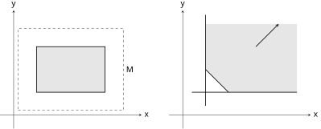
查看 TikZ 原始碼
\begin{document}
\begin{tikzpicture}[>=stealth]
\begin{scope}[shift={(0,0)}]
\draw[->] (-0.6,0) -- (5.6,0) node[right] {$x$};
\draw[->] (0,-0.6) -- (0,4.6) node[above] {$y$};
\fill[gray!20] (1,1) -- (4,1) -- (4,3) -- (1,3) -- cycle;
\draw[thick] (1,1) -- (4,1) -- (4,3) -- (1,3) -- cycle;
\draw[dashed] (0.2,0.2) -- (4.8,0.2) -- (4.8,3.8) -- (0.2,3.8) -- cycle;
\node[right] at (4.8,2.0) {$M$};
\end{scope}
\begin{scope}[shift={(7.4,0)}]
\draw[->] (-0.6,0) -- (5.6,0) node[right] {$x$};
\draw[->] (0,-0.6) -- (0,4.6) node[above] {$y$};
\fill[gray!20] (2,1) -- (5.0,1) -- (5.0,4.0) -- (1,4.0) -- (1,2) -- cycle;
\draw[thick] (1,0.4) -- (1,4.4);
\draw[thick] (0.4,1) -- (5.0,1);
\draw[thick] (1,2) -- (2,1);
\draw[->, thick] (3.2,3.0) -- (4.2,4.0);
\end{scope}
\end{tikzpicture}
\end{document}图 28-19A：左为有界区域，可被虚线正方形（
界）罩住； 右为无界区域，沿箭头方向无限延伸。
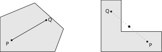
查看 TikZ 原始碼
\begin{document}
\begin{tikzpicture}[>=stealth]
\begin{scope}[shift={(0,0)}]
\fill[gray!20] (0.4,0.4) -- (4.2,0.4) -- (4.8,2.0) -- (2.8,3.8) -- (0.4,2.8) -- cycle;
\draw[thick] (0.4,0.4) -- (4.2,0.4) -- (4.8,2.0) -- (2.8,3.8) -- (0.4,2.8) -- cycle;
\filldraw (1.2,1.2) circle (1.6pt) node[below left] {$P$};
\filldraw (3.6,2.6) circle (1.6pt) node[right] {$Q$};
\draw[thick] (1.2,1.2) -- (3.6,2.6);
\end{scope}
\begin{scope}[shift={(7.0,0)}]
\fill[gray!20] (0.4,0.4) -- (4.6,0.4) -- (4.6,1.8) -- (1.8,1.8) -- (1.8,4.0) -- (0.4,4.0) -- cycle;
\draw[thick] (0.4,0.4) -- (4.6,0.4) -- (4.6,1.8) -- (1.8,1.8) -- (1.8,4.0) -- (0.4,4.0) -- cycle;
\filldraw (3.6,1.1) circle (1.6pt) node[below right] {$P$};
\filldraw (1.1,3.2) circle (1.6pt) node[left] {$Q$};
\draw[dashed, gray] (3.6,1.1) -- (1.1,3.2);
\draw[fill=white] (2.35,2.15) circle (2pt);
\end{scope}
\end{tikzpicture}
\end{document}图 28-19B：左为凸多边形，
、 的连线段整条在形内； 右为非凸多边形，线段中段（空心点处）在形外，此时「平行线最后接触点为顶点」的论证不再成立。
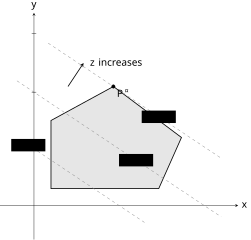
查看 TikZ 原始碼
\begin{document}
\begin{tikzpicture}[>=stealth]
\draw[->] (-1.2,0) -- (7.2,0) node[right] {$x$};
\draw[->] (0,-1.2) -- (0,6.8) node[above] {$y$};
\fill[gray!20] (0.6,0.6) -- (4.4,0.6) -- (5.2,2.4) -- (2.8,4.2) -- (0.6,3.0) -- cycle;
\draw[thick] (0.6,0.6) -- (4.4,0.6) -- (5.2,2.4) -- (2.8,4.2) -- (0.6,3.0) -- cycle;
\draw[dashed, gray] (-0.4,2.27) -- (3.9,-0.6);
\draw[dashed, gray] (-0.6,4.4) -- (6.6,-0.4);
\draw[dashed, gray] (0.5,5.73) -- (6.6,1.67);
\node[fill=white] at (-0.2,2.13) {$z=z_1$};
\node[fill=white] at (3.6,1.6) {$z=z_2$};
\node[fill=white] at (4.4,3.13) {$z=z_3$};
\draw (0.08,2) -- (-0.08,2);
\draw (0.08,4) -- (-0.08,4);
\draw (0.08,6.07) -- (-0.08,6.07);
\draw[->, thick] (1.2,4.2) -- (1.75,5.03);
\node[right] at (1.85,5.05) {$z$ increases};
\filldraw (2.8,4.2) circle (1.7pt) node[below right] {$P^{*}$};
\end{tikzpicture}
\end{document}设 $b \neq 0$。
把目标函数写为 $f(x, y) = z$，即
$$y = -\dfrac{a}{b}x + \dfrac{z}{b}.$$
固定 $z$ 时这是斜率为 $-\dfrac{a}{b}$、$y$ 截距为 $\dfrac{z}{b}$ 的直线；
$z$ 变动时得到一族平行线。
$b > 0$ 时 $z$ 越大截距 $\dfrac{z}{b}$ 越大，直线位置越高；
$b < 0$ 时方向相反。
如图 28-20 所示（图中取 $b > 0$ 的情形）。
图 28-20：一族平行线 $y = -\dfrac{a}{b}x + \dfrac{z}{b}$（$b > 0$，截距 $\dfrac{z_1}{b} < \dfrac{z_2}{b} < \dfrac{z_3}{b}$）沿截距增大方向平移。
直线最后与可行区域接触的位置即 $z$ 取最大值处，接触点为顶点 $P^{*}$。
把这族平行线沿截距增大的方向平移：直线最后脱离可行区域的那个位置，即 $z$ 取最大值的位置。
可行区域为凸多边形，平行线最后接触它的点必为多边形的某个顶点（若最后接触的是一整条边，则该边的两个端点，即顶点，同样取得该最值）。
最小值同理，取平行线首次接触可行区域的位置。 故最值必在某顶点取得。
解线性规划问题的标准步骤：
- 设变量：明确 $x, y$ 各代表什么；
- 列约束：把所有限制条件（含非负条件）写成二元一次不等式；
- 写目标：把要求的量写成 $z = ax + by$（$+c$ 不影响最值位置）；
- 画可行区域：按 §28.2 的算法画出可行区域；
- 求顶点：可行区域的顶点是两条边界直线的交点，解联立方程求出各顶点坐标；
- 代目标：把各顶点坐标代入目标函数；
- 比较得结论：比较各值，最大者即最大值，最小者即最小值，以文字写出答案。
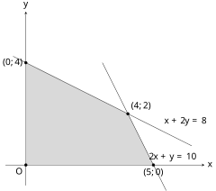
查看 TikZ 原始碼
\begin{document}
\begin{tikzpicture}[>=stealth]
\draw[->] (-0.8,0) -- (7,0) node[right] {$x$};
\draw[->] (0,-0.8) -- (0,6) node[above] {$y$};
\fill[gray!30] (0,0) -- (5,0) -- (4,2) -- (0,4) -- cycle;
\draw (-0.5,4.25) -- (6.5,0.75);
\draw (3,4) -- (5.5,-1);
\filldraw (0,0) circle (1.5pt) node[below left] {$O$};
\filldraw (5,0) circle (1.5pt) node[below] {$(5,0)$};
\filldraw (4,2) circle (1.5pt) node[above right] {$(4,2)$};
\filldraw (0,4) circle (1.5pt) node[left] {$(0,4)$};
\node[right] at (5.3,1.7) {$x+2y=8$};
\node[right] at (4.7,0.3) {$2x+y=10$};
\end{tikzpicture}
\end{document}某工厂生产甲、乙两种产品，每件的利润分别为 $3$ 千元与 $2$ 千元。生产受两项资源限制：$x + 2y \le 8$ 与 $2x + y \le 10$，其中 $x, y$ 为甲、乙的日产量（件），且 $x \ge 0$，$y \ge 0$。求日利润的最大值。
目标函数 $z = 3x + 2y$（千元）。可行区域由四条不等式围成，如图 28-21 所示。
图 28-21：约束 $x + 2y \le 8$、$2x + y \le 10$、$x \ge 0$、$y \ge 0$ 的可行区域（阴影四边形）及其四个顶点。
求顶点：$x = 0$ 与 $y = 0$ 交于 $(0, 0)$；$y = 0$ 与 $2x + y = 10$ 交于 $(5, 0)$；$x = 0$ 与 $x + 2y = 8$ 交于 $(0, 4)$；两斜线联立 $x + 2y = 8$，$2x + y = 10$，解得 $(4, 2)$。 代目标：
| 顶点 | $z = 3x + 2y$ |
|---|---|
| $(0, 0)$ | $0$ |
| $(5, 0)$ | $15$ |
| $(4, 2)$ | $16$ |
| $(0, 4)$ | $8$ |
比较得最大值为 $16$。故当 $x = 4$，$y = 2$ 时，日利润最大，为 $16$ 千元。
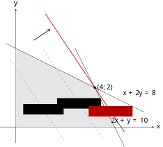
查看 TikZ 原始碼
\begin{document}
\begin{tikzpicture}[>=stealth]
\draw[->] (-0.8,0) -- (7,0) node[right] {$x$};
\draw[->] (0,-0.8) -- (0,6) node[above] {$y$};
\fill[gray!20] (0,0) -- (5,0) -- (4,2) -- (0,4) -- cycle;
\draw (-0.5,4.25) -- (6.5,0.75);
\draw (3,4) -- (5.5,-1);
\draw[dashed, gray] (-0.3,3.45) -- (2.5,-0.75);
\draw[dashed, gray] (1.4,3.9) -- (4.4,-0.6);
\draw[thick, red!70!black] (1.5,5.75) -- (5.5,-0.25);
\draw[->, thick] (0.9,4.4) -- (1.75,4.97);
\filldraw (4,2) circle (1.5pt) node[right] {$(4,2)$};
\node[fill=white] at (1.4,0.9) {$3x+2y=6$};
\node[fill=white] at (3.2,1.2) {$3x+2y=12$};
\node[red!70!black, fill=white] at (4.8,0.8) {$3x+2y=16$};
\node[right] at (5.3,1.7) {$x+2y=8$};
\node[right] at (4.7,0.3) {$2x+y=10$};
\end{tikzpicture}
\end{document}端点代入法稳妥不易错；理解「为什么最优解在顶点」则靠推线法。把目标函数 $z = ax + by$ 看作直线族 $ax + by = k$：在图 28-21 的可行区域上画斜率为 $-\dfrac{3}{2}$ 的直线族 $3x + 2y = k$，改变 $k$ 使直线平移，如图 28-22 所示。$k$ 增大时直线向右上方移动；直线在可行区域内能达到的最大 $k$，即直线最后脱离可行区域的位置，此时直线过顶点 $(4, 2)$，$k = 16$，与端点代入法一致。若目标函数直线的斜率恰与某边界相同，则该边界上所有点均为最优解（其端点仍是顶点，代顶点即可）。
图 28-22：推线法。
在可行区域上平移直线族 $3x + 2y = k$（灰虚线 $k = 6$、$k = 12$，红实线 $k = 16$）；
箭头示 $k$ 增大的方向，直线最后脱离可行区域时过顶点 $(4, 2)$，故 $z$ 的最大值为 $16$。
DSE 线性规划应用题常要求 $x, y$ 为整数（产量、件数不可为分数）。若最优顶点坐标非整数，不可四舍五入：舍入后的点可能不在可行区域内。正确做法是检查最优顶点附近的整数格点，逐一确认其仍在可行区域内，再比较目标函数值。例如可行区域含顶点 $(2.5, 3.5)$ 而题目要求整数解时，须检验 $(2, 3)$、$(3, 3)$、$(2, 4)$、$(3, 4)$ 等格点是否在区域内，取其中使目标最优者。
28.3.3 最优解的存在性（Existence of Optimal Solutions）
§28.3.2 的顶点原理说：最值若存在，必在顶点。它没有回答另一半问题：最值是否存在。可行区域若不是闭的，或者向外敞开，目标函数就可能「无限接近却取不到」，或者「可以无限增大」。本节把这些情形说清，用的语言是 §16.7 的上界、有界集与确界。 本节内容 DSE 常规课程不作要求（必修 8.6 只要求解线性规划应用题，默认区域封闭有界），属增润；结论可用来检验答案是否合理，作答时不必写出论证。
本小节内容上限：T A- ｜ C C ｜ E B+ ｜ Q C+（增润）
设 $R \subseteq \mathbb{R}^2$ 为一可行区域。
- 若存在正数 $M$，使 $R$ 中每一点 $(x, y)$ 都满足 $\lvert x \rvert \le M$ 且 $\lvert y \rvert \le M$，则称 $R$ 为有界区域（Bounded Region）；否则称 $R$ 为无界区域（Unbounded Region）。几何上，有界即能被一个正方形罩住。
- 若 $R$ 含其每一条边界上的边界点（表现为各约束均以 $\ge$、$\le$ 书写，图中边界全为实线），则称 $R$ 为闭区域（Closed Region）；只要有一条边界取严格不等号（图中画虚线），$R$ 便不是闭区域。
设可行区域 $R$ 非空、有界且闭，其全部顶点为 $V_1, V_2, \ldots, V_n$。设目标函数为 $z = f(x, y) = ax + by$。则 $z$ 在 $R$ 上同时取得最大值与最小值，且两者都可在某个顶点处取得。
**第一步：顶点有限。
** $R$ 由有限条边界直线围成，每个顶点是其中两条的交点，故顶点个数 $n$ 有限；
$R$ 非空且有界，故 $n \ge 3$。
**第二步：有限个实数必有最值。
** 把各顶点的目标值列出，$z(V_1), z(V_2), \ldots, z(V_n)$。
这是 $n$ 个实数，两两比较只需有限步（§11.1 三歧性与传递性），故其中必有最大者与最小者。
记
$$M^{} = \max_{1 \le i \le n} z(V_i), m^{} = \min_{1 \le i \le n} z(V_i).$$
**第三步：区域中任一点的函数值被两值夹住。
** 取 $R$ 中任一点 $P$。
过 $P$ 作目标直线 $ax + by = z(P)$，并沿 $z$ 增大的方向平移（§28.3.2 证明）。
因 $R$ 有界，平移不能无限进行：$R$ 中所有点的横、纵坐标都被 $M$ 压住，故
$$z = ax + by \le \lvert a \rvert \lvert x \rvert + \lvert b \rvert \lvert y \rvert \le (\lvert a \rvert + \lvert b \rvert) M,$$
目标值有上界。
沿增大方向平移到恰不能再移的位置时，直线与 $R$ 仍有公共点而再移即脱离；
$R$ 是闭区域，脱离前的最后位置仍属 $R$，该位置的直线只碰在顶点或一整条边上（同上证明），其目标值不小于 $z(P)$。 故 $z(P) \le M^{*}$。 同理沿减小方向得 $m^{*} \le z(P)$。
**第四步：最值确实取得。
** $M^{}$ 与 $m^{}$ 各在某个顶点取得，而闭区域含其全部顶点，故由 §16.7.1（最大值、最小值必须属于集合），$M^{}$ 是 $z$ 在 $R$ 上的最大值，$m^{}$ 是最小值。
（第三步以平行线扫描的几何直观为准；
其严格化须另立 $\mathbb{R}^2$ 的相应性质，超出本课程范围。）
有界与闭两个条件都不多余：任一失效，最值就可能不存在，或存在却不来自顶点。
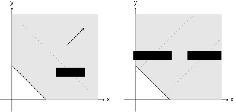
查看 TikZ 原始碼
\begin{document}
\begin{tikzpicture}[>=stealth]
\begin{scope}[shift={(0,0)}]
\draw[->] (-0.7,0) -- (5.4,0) node[right] {$x$};
\draw[->] (0,-0.7) -- (0,5.4) node[above] {$y$};
\fill[gray!20] (2,0) -- (5.0,0) -- (5.0,5.0) -- (0,5.0) -- (0,2) -- cycle;
\draw[thick] (0,2) -- (2,0);
\draw[dashed, gray] (0.6,4.4) -- (4.4,0.6);
\node[fill=white] at (3.4,1.6) {$x+y=5$};
\draw[->, thick] (3.2,3.2) -- (4.2,4.2);
\end{scope}
\begin{scope}[shift={(7.2,0)}]
\draw[->] (-0.7,0) -- (5.4,0) node[right] {$x$};
\draw[->] (0,-0.7) -- (0,5.4) node[above] {$y$};
\fill[gray!20] (2,0) -- (5.0,0) -- (5.0,5.0) -- (0,5.0) -- (0,2) -- cycle;
\draw[thick] (0,2) -- (2,0);
\draw[dashed, gray] (1.4,0) -- (5.0,3.6);
\draw[dashed, gray] (0,1.6) -- (3.4,5.0);
\node[fill=white] at (4.0,2.6) {$x-y=1.4$};
\node[fill=white] at (1.0,2.6) {$x-y=-1.6$};
\end{scope}
\end{tikzpicture}
\end{document}设可行区域 $R$ 由 $x \ge 0$、$y \ge 0$、$x + y \ge 2$ 给出。判断下列目标函数在 $R$ 上是否有最大值与最小值。
- $z = x + y$
- $z = x - y$
$R$ 是以 $(2, 0)$、$(0, 2)$ 为顶点、向右上方无限延伸的无界区域（三边界均含等号，故为闭区域），如图 28-23 所示。
- $R$ 中每点都满足 $z = x + y \ge 2$，而边界线段 $x + y = 2$（$0 \le x \le 2$）上各点都使 $z = 2$，故最小值 $2$ 存在，且沿一整条边取得（顶点 $(2, 0)$ 与 $(0, 2)$ 是其例）。另一方面，点 $(t, t) \in R$（$t \ge 1$）使 $z = 2t$ 可任意大，故无最大值。
- 点 $(t, 0) \in R$（$t \ge 2$）使 $z = t$ 可任意大；点 $(0, t) \in R$（$t \ge 2$）使 $z = -t$ 可任意小。故既无最大值也无最小值。
同一区域，换一个目标函数，结论完全不同：有无最值取决于目标直线的方向是否与区域的开口方向「相撞」。
图 28-23：无界可行区域（$x \ge 0$、$y \ge 0$、$x + y \ge 2$）。
左：$z = x + y$ 的最小值 $2$ 沿整条边界线段取得，而 $z$ 可无限增大，无最大值；
右：$z = x - y$ 沿两向皆可平移，既无最大值也无最小值。
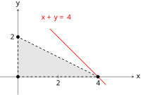
查看 TikZ 原始碼
\begin{document}
\begin{tikzpicture}[>=stealth]
\draw[->] (-0.9,0) -- (5.8,0) node[right] {$x$};
\draw[->] (0,-0.9) -- (0,3.4) node[above] {$y$};
\fill[gray!20] (0,0) -- (4,0) -- (0,2) -- cycle;
\draw[thick, dashed] (0,0) -- (4,0);
\draw[thick, dashed] (0,0) -- (0,2);
\draw[thick, dashed] (4,0) -- (0,2);
\draw[red, thick] (1.6,2.4) -- (4.4,-0.4);
\node[red] at (1.9,2.95) {$x+y=4$};
\draw (2,0.08) -- (2,-0.08) node[below] {$2$};
\draw (4,0.08) -- (4,-0.08) node[below] {$4$};
\draw (0.08,2) -- (-0.08,2) node[left] {$2$};
\draw[fill=white] (4,0) circle (2.2pt);
\draw[fill=white] (0,2) circle (2.2pt);
\draw[fill=white] (0,0) circle (2.2pt);
\end{tikzpicture}
\end{document}设可行区域 $R$ 由 $x > 0$、$y > 0$、$x + 2y < 4$ 给出，目标函数为 $z = x + y$。讨论 $z$ 在 $R$ 上的最大值与最小值。
三条边界全取严格不等号，故 $R$ 是以 $(0, 0)$、$(4, 0)$、$(0, 2)$ 为顶点的三角形的内部，三边均画虚线（图 28-24）。它是有界的（例如 $\lvert x \rvert < 4$、$\lvert y \rvert < 2$ 在 $R$ 上恒成立），但不闭。
有上界： $R$ 中的点满足 $y > 0$，故 $z = x + y < x + 2y < 4$，即 $4$ 是值集合的一个上界。由完备性公理（§16.7.4），值集合必有上确界。
不可达： 取 $\varepsilon$ 满足 $0 < \varepsilon < \tfrac{2}{3}$，令 $x = 4 - 3\varepsilon$、$y = \varepsilon$，则 $x > 0$、$y > 0$，且 $x + 2y = 4 - \varepsilon < 4$，点属 $R$；
此时 $z = 4 - 2\varepsilon$ 可随 $\varepsilon$ 趋小而任意接近 $4$，却恒小于 $4$。故值集合的上确界是 $4$，而 $4$ 不属于该集合，最大值不存在（§16.7.1 要求最大值必须属于集合）。
下界同理： $z > 0$；取 $x = \varepsilon$、$y = \varepsilon$（$0 < \varepsilon < 1$）属 $R$，$z = 2\varepsilon$ 可任意接近 $0$。故下确界为 $0$，最小值不存在。 顶点值 $0$、$4$、$2$ 在此题中一律不可用：三个顶点全不在 $R$ 内（边界为虚线）。这就是顶点原理要求「区域闭」的原因。
图 28-24：非闭可行区域（$x > 0$、$y > 0$、$x + 2y < 4$），三边虚线。
红实线 $x + y = 4$ 是目标值的上界位置，但它与区域只「趋近」不相交（$(4,0)$ 为空心点，不属区域），故 $z = x + y$ 无最大值，上确界为 $4$。
- 区域为空：约束彼此矛盾（如 $x + y \ge 3$ 与 $x + y \le 1$ 并列），$R = \varnothing$，值集合是空集，无最大亦无最小（§16.7.1 的定义以 $S \neq \varnothing$ 为前提）。
- 区域无界：朝目标函数增大方向敞开时，值集合无上界，上确界都不存在（示例 1）。
- 区域不闭：值集合可有上界、有上确界，但上确界不属于集合，故最大值不存在（示例 2）。此时「把顶点值一比大小就作答」是错的，因为最紧的那个顶点根本不在区域内。
DSE 与应用题惯例下的可行区域几乎总是有界闭区域，顶点代入法因而总是可用；但一旦图中出现虚线边界或无界开口，须先判断最值是否存在再作答，并说明理由。不可把「各顶点目标值的最大者」直接写成最大值：若该顶点在虚线边界上，它不属于可行区域，答案应为「无最大值，上确界为……」。
28.4 小结（Summary）
五条主线：
- 逻辑连词与集合运算（§28.1.1）：不等式是关于未知数的开放命题，其解集由概括原则给出 $\{x \mid P(x)\}$；「且」对应交集 $\cap$，「或」对应并集 $\cup$。这是贯穿全章的统一框架：一元不等式组取交集，一元二次不等式的解是区间的并集，可行区域是半平面的交集。定义先给 $P_1(x) \land \cdots \land P_n(x)$ 的逻辑形式，花括号只是它的记号缩写。
- 一元不等式组（§28.1.2）：数线法把各解集画在同一条数线上，重叠部分即「且」的解；口诀法（同大取大、同小取小、大小小大中间找、大大小小无处找）是交集的快捷判断。三角不等式（两边之和大于第三边）是其经典应用。
- 一元二次不等式（§28.1.3）：先把「图像在 $x$ 轴上方／下方」读成 $f(x)$ 的正负（§28.1.3 开头的取点读法，图 28-6）；再解对应方程 $f(x) = 0$ 求根，套口诀「$a > 0$ 时大过零两边走、小过零向中间」，$\Delta < 0$ 时二次三项式恒号。
- 含绝对值的不等式（§28.1.4，增润）：绝对值一出现先去绝对值号。与常数比较用基本解型（$\lvert u \rvert < c \iff -c < u < c$），两个绝对值比较用同方平方（$\lvert u \rvert > \lvert v \rvert \iff u^2 > v^2$），化回一元一次或一元二次；$c \le 0$ 的退化情形先判符号。
- 二元一次不等式与线性规划（§28.2、§28.3）：边界实虚对应含等号与否（同数线的实心空心）；试值法定侧；联立不等式的解为半平面之交，即可行区域；线性规划以端点代入法求最值（顶点原理），推线法提供几何解释；区域无界或边界不闭时最值未必存在，须先判定（§28.3.3）。
易错点：
- 混淆「且」与「或」：不等式组求交集，分类讨论求并集。
- 数线端点空心实心、平面边界实线虚线画错。
- 解一元二次不等式前不检查首项系数正负，$a < 0$ 时口诀用反。
- 线性规划最优顶点非整数时四舍五入，未检验格点是否在可行区域内。
- 解 $\lvert u \rvert > c$ 漏掉 $u < -c$ 一支，或在 $c \le 0$ 时照套解型。
- 见虚线边界或无界开口即默认最值存在，把最大顶点值当作最大值。
方法总表
| 对象 | 典型形式 | 方法 | 关键步骤 |
|---|---|---|---|
| 一元一次不等式组 | 数线法／口诀法 | 各解画数线，取重叠（且）或合并（或） | |
| 一元二次不等式 | 图解法 | 看 |
|
| 一元二次不等式 | 可因式分解 | 代数法（求根加口诀） | 化正、求根、套口诀、并等号 |
| 含绝对值不等式 | 基本解型 | 去绝对值号化为复合不等式 | |
| 含绝对值不等式 | 平方转化法 | 平方化二次再解 | |
| 二元一次不等式 | 试值法 | 画边界（实虚）、试值定侧、涂阴影 | |
| 联立二元一次不等式 | 多个二元一次不等式 | 图解法 | 各半平面取交，得可行区域 |
| 线性规划 | 约束下求 |
端点代入法 | 画区域、求顶点、代目标、比较 |
| 最值存在性 | 区域无界或边界不闭 | 确界判断（§28.3.3） | 先判有无，再取顶点值 |
回顾全章：从数线到平面，从单个不等式到不等式组，主线只有一条，即用集合的交与并组织「且」与「或」。一元二次不等式把 二次函数 的图像拉进来，线性规划把 直线方程 的坐标几何拉进来，而逻辑骨架始终是 §16.4 的集合运算。下一章的平面几何(II)将回到纯几何的论证；不等式组的思维，则会在轨迹与解析几何中继续出现。
中英对照词汇表（Glossary）
| 中文术语 | 英文 | 符号或简写 | 备注 |
|---|---|---|---|
| 解集 | Solution Set | 不等式所有解的集合 | |
| 复合不等式 | Compound Inequality | 以「且」或「或」联结 | |
| 一元不等式组 | System of Inequalities in One Variable | ||
| 且 | and | 解集取交集 | |
| 或 | or | 解集取并集 | |
| 合取 | Conjunction | 「且」，解集取交集 | |
| 析取 | Disjunction | 「或」，解集取并集 | |
| 一元二次不等式 | Quadratic Inequality in One Unknown | ||
| 图解法 | Graphical Method | 读抛物线轴上轴下 | |
| 代数法 | Algebraic Method | 解对应方程求根后套口诀 | |
| 三角不等式 | Triangle Inequality | 两边之和大于第三边 | |
| 均值不等式 | AM-GM Inequality | 增润，DSE 不作要求 | |
| 绝对值不等式 | Absolute Value Inequality | 先去绝对值号，属增润 | |
| 基本解型 | Elementary Forms | 与常数比较的两条等价式 | |
| 同方比较 | Comparison by Squaring | 非负数平方保序 | |
| 二元一次不等式 | Linear Inequality in Two Unknowns | 解为半平面 | |
| 边界直线 | Boundary Line | 实线含等号，虚线不含 | |
| 半平面 | Half-Plane | 直线分平面所成 | |
| 试值法 | Test Point Method | 常取原点 | |
| 实线 | Solid Line | 边界属于解区域 | |
| 虚线 | Dashed Line | 边界不属于解区域 | |
| 联立二元一次不等式 | System of Linear Inequalities in Two Unknowns | 解为半平面之交 | |
| 可行区域 | Feasible Region | 凸多边形区域 | |
| 二元线性函数 | Bivariate Linear Function | ||
| 线性规划 | Linear Programming | 约束下求最值 | |
| 约束条件 | Constraints | 以不等式表示 | |
| 目标函数 | Objective Function | 也称目标函数直线族 | |
| 等值线 | Level Curve | 二元线性函数的等值线是直线 | |
| 可行解 | Feasible Solution | 可行区域内的点 | |
| 最优解 | Optimal Solution | 使目标取最值的可行解 | |
| 顶点原理 | Vertex Principle | 最值在顶点取得 | |
| 端点代入法 | Vertex Method | 求顶点、代目标、比较 | |
| 推线法 | Sliding Line Method | 平移目标直线族 | |
| 有界区域 | Bounded Region | 可被正方形罩住 | |
| 闭区域 | Closed Region | 全部边界为实线 |
备课提示（Teaching Notes）
- 「且」与「或」的区分是首要难点。 引入时直接以集合语言建立框架：「且」取交、「或」取并，并以数线反复演示。对比例：
- 一元二次不等式先图后代。 先以取点读坐标（图 28-6）建立「
- 数线重叠法是笔记簿的原生方法。 本节数线法与教师笔记簿的讲法一致：将每一个不等式的解画在数线上，然后根据逻辑关系判断解的范围；「且」无重叠即无解、「或」全覆盖即全体实数两个特殊情形须在课堂演示。代数法只教「求根＋口诀」，符号分析仅作一行原理说明，不另成流程。
- 边界实虚与端点空实一并强调。 平面边界的实线/虚线与数线端点的实心/空心是同一规则的两副面孔，可设计「给不等式，判断边界画法」的速练。
- 线性规划重在文字翻译。 系统训练文字转不等式的常见对应（不少于、最多、不超过、至少、非负），再进入画图与代点。端点代入法为标准步骤；推线法（平移目标直线族）作为几何解释辅助理解「为什么最优解在顶点」，有条件时用动态几何软件演示平移过程。
- 整数解变体须专门提醒。 最优顶点非整数时不可四舍五入，须逐一检验邻近格点是否在可行区域内。此为 DSE 常见考法。
- 绝对值一节先复习两条旧事实。 开口先回到 §6.3.1 的分段表示与 §15.1.5 的距离解释，分类讨论与平方转化两条路各练两题；重点纠正
- 存在性一节只上三句判断。 §28.3.3 属增润，课堂用「空集、无界、虚线边界」三种失效各配一道判断题即可，不展开证明；与 Ch16 §16.7 确界复习配合，强调「上确界存在不等于最大值存在」。
✅ 已執行（2026-09-02）：落实 Ch28 四处注释——解集示例独立成例题（解不等式后以集合表示解集）、不等式组定义形式化（开放命题铺垫＋仿方程组定义＋∧∨ 符号）、§28.1.1 示例完整化并新增图 28-1A/B（原图 28-1–28-4 顺延为 28-2–28-5）、删除三处练习板块；同步撤销写作规范 5.2 第 6 行与 5.4 练习规范（含修订方案 B-16 标记）。
✅ 已執行（2026-09-03）：修正图 28-1A/B、图 28-2 数线图中空心圆的绘制位置——由实数轴上（y=0）移至数线上方、各射线的起点处（白底空心圆以遮住箭头起点），与教科书「以空心圆为起点画箭头」的约定一致；该图示约定已同步运用于 Ch11 §11.2.2（新增图 11-1、图 11-2）。
✅ 已執行（2026-09-10）：按用户要求为示例补几何图示 11 幅（画出解之区域）：新增图 28-1（解集射线）、28-3B（「或」全覆盖）、28-3C（「且」无解）、28-4（口诀四情形）、28-5（三角不等式三段重叠）、28-7A/B/C（二次不等式三例）、28-8（
✅ 已執行（2026-09-10）：落实第三轮 19 处注释：§28.1.1 解集与不等式组定义逻辑化（开放命题前置、概括原则给符号形式、先 ∧ 后花括号）；§28.1.3 补取点读图注记与图 28-6、图解法定理补 α 与 β 的根定义、代数法改「求根加口诀」；新开 §28.1.4 含绝对值的不等式（基本解型与同方比较两定理含证明、平方转化法、两示例、c≤0 退化警告，自标增润）；§28.2.1 补六幅配图、删两处证明末括注、三歧性引用改 §11.1；§28.2.2 联立定义逻辑化；§28.3.1 线性函数改用 Ch19 函数记号并补可行解示例；§28.3.2 顶点原理改写并补四条件注记与平行线图；新开 §28.3.3 最优解的存在性（有界闭定义、存在性定理含证明、两反例、失效注记与警告，自标增润）；全章图号重编为 28-1 至 28-24（33 块）；难度上限 §28.1 改 T B-｜C B-｜E C+｜Q C+、§28.3 改 T B｜C C+｜E C+｜Q B-；小结改五条主线、方法总表与词汇表（35 条）同步；前置行增 Ch6、Ch15、Ch18、Ch19。
✅ 已執行（2026-09-21）：依用戶對 Ch28 習題冊第一輪注釋之裁決，按《習題難度標記方案-規劃.md》v1.3 判據重打標上限行——§28.1（L19）「T B-｜C B-｜E C+｜Q C+」改「T B+｜C B-｜E B-｜Q C+」（依據：§28.1.3 圖解法定理之 Δ 三分類證明與 Δ<0 恆號性之配方法證明；§28.1.4 基本解型之「雙向 × 雙支」證明與含反證之同方比較定理證明）；§28.2（L898）「T C+｜C C｜E C｜Q B-」改「T B｜C C+｜E B-｜Q B-」（依據：§28.2.1 上大下小準則以 x0 的任意性作符號化論證、半平面定理；含參約束之臨界失效論證屬本節內容可支撐深度）；§28.3（L1238）大節上限維持「T B｜C C+｜E C+｜Q B-」（必修內容口徑）；另於 §28.3.3 標題下新增「本小節內容上限：T A-｜C C｜E B+｜Q C+（增潤）」——該節含量詞式定義、存在性定理四步證明、確界與 ε 反例族，內容真實深度為 A 檔區間，而原上限行按必修例題深度打標（受「作答時不必寫出論證」自我標籤遮蔽），致習題冊如實打標即判越限。依《習題冊規劃說明方案.md》7.7 新增之「增潤小節得另立內容上限行」條款，該行不參與四維全同觸頂校驗，惟該小節習題之逐維檔位不得突破。備份 Chapter 28 不等式 (II).md.bak_upper0921。
反向链接
正在加载反向链接…
本文引用
正在加载…